Honest milestone reports, what shipped, what was measured, and what is still in progress.
150/150 tests · packet-only
V18, Gaussian Enhancement Pipeline
Scope correction from “frame enhancement”: V18 makes the Gaussian render itself better — enhancement of rendered Gaussian imagery, conditioned on scene metadata — not full-frame / display post-processing. That later whole-frame stage stays an optional visualization capability. The voxel world is never touched.
Live proof: /api/genh/image?profile=medium returns a real 320×240 enhanced hallway frame (tan floor/walls) after upscale → detail → material. Disabled profile is deterministic passthrough. Enhancers depend only on the packet — renderer-independent. A new enhancer is a class + register(); the engine never changes.
Disabled = passthrough — identical to the raw Gaussian render.
Modular chain — one GaussianEnhancer.enhance(packet)→packet; profiles scale low → medium → high → cloud.
Renderer-independent — a packet built from scratch enhances fine.
Extensible — sepia shown as class + register only.
Browser-transparent — requests Gaussian renders; receives an enhanced image via the Visualization Engine path.
Profiles
low — empty pipeline (passthrough)
medium — upscale → detail → material
high — + edge_aa → temporal
cloud — AI stages (guarded / skipped without weights)
Honest Scope Notes
AI photorealism / super-resolution need GPU weights not present here. The tested path is classical-CV (upscale / detail / material-conditioned / edge-AA / temporal / stylize). AI enhancers (RealESRGAN, photorealistic, reflection) are guarded stubs that report the exact blocker and raise rather than fabricate — plugging a real model in is implement enhance + register, no engine change.
CPU splat rasterizer is a reference rasterizer, not the browser WebGL splat renderer. It makes the packet + pipeline real and testable without a GPU. Wiring the browser to display the enhanced image (vs live WebGL splats) is a small display-mode follow-up; /api/genh/image already returns the enhanced frame.
Metadata unprojection is subsampled for speed; denser / GPU pass is future work.
Bottom line: the Gaussian render is now a first-class, metadata-rich, enhanceable artifact. Voxel world stays authoritative; compiler produces artifacts; rasterizer renders deterministically; enhancement is an interchangeable capability — not a fundamental engine requirement. Whole-frame / display post-processing remains the clean optional later stage. Deliverables: vwm/gaussian_enhancement/*, docs/V18_REPORT.md, /api/genh/*, the live panel, and 15 new tests (150 total).
135/135 tests · world alive
V17, World Simulation
VWM is now alive: simulation evolves the authoritative Adaptive Voxel World through time. Up to V16 the system answered “what is the world?”; V17 answers “what is the world doing?” — and it adds no new foundational layer. It uses the Runtime (V11), Evidence Engine, Voxel World, Compiler (V15), and Visualization (V16) already built.
✅ Door opens → voxels change → gaussian auto-recompiles 768→764 — zero special integration
The headline success criterion holds: the compiler and visualization respond automatically to simulation changes with no orchestration in the simulation engine. A one-time auto_wire() on the V15 compiler subscribes to ChunkInvalidated; pressing a button to open a door removes 4 voxels and that chunk’s gaussian artifact recompiles (768→764 splats, changed checksum). Pipeline: tick → behaviors + triggers → ctx.change_voxels → Runtime events → Evidence → Voxel World → Compiler (auto) → Visualization.
135/135Tests (17 V17 + prior suites)
768→764Splats after door opens (auto)
9Built-in behavior types
0Artifact writes by sim engine
1auto_wire() for compiler
✓Deterministic replay
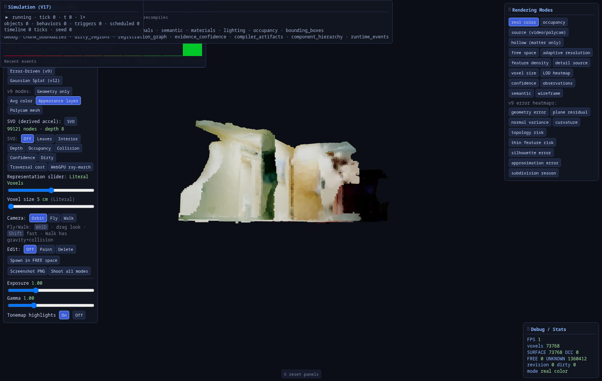
Simulation (V17) panel, live. Running / paused · tick · sim time · speed · objects · behaviors · triggers · scheduled tasks. Endpoint: /api/sim/diagnostics. Play/pause/step browser controls are a small follow-up — the API already exists.
The Stack (vwm/simulation/)
Every module the spec listed: engine · systems/behaviors · scheduler · timeline · events · triggers · state · diagnostics · api, plus continuous (the preserved pre-V17 WorldClock / EventScheduler API). Entry points: world.simulation and world.tick / pause / resume / step / play.
Behaviors, Triggers, Time
Behaviors as data — Behavior.update(obj, ctx, dt) attached to objects. Built-ins: door · battery · light · traffic_light · vehicle · robot · tree · river · weather.
Triggers — manual / button / time / schedule / distance / region / sensor / signal / collision.
Time control — pause / resume / replay / fast-forward / slow-motion / single-step via the Runtime clock.
Events on the V11 bus — DoorOpened / DoorClosed / BatteryEmpty / LightChanged / VehicleMoved / RobotArrived / WeatherStarted-Stopped + SimTick / TriggerFired; DoorOpened and VoxelChanged both fire on a door open.
Determinism — same world + events + seed → identical timeline (tested).
Extensibility — a new behavior (sprinkler shown) is just a class attached to an object; the engine never changes.
Migration Handled Honestly
A pre-existing vwm/simulation.py (WorldClock / EventScheduler / CONTINUOUS_TYPES, imported by vwm.components, vwm.voxel_world, vwm.persistence) was shadowed by the new package. It moved to vwm/simulation/continuous.py with re-exports from the package __init__ — every legacy import still works, and all prior tests pass. Documented in docs/V17_REPORT.md.
Honest Scope Notes
Behavior realism is illustrative — the milestone prioritizes architecture over realism; rich physics / animation is future work on the same Behavior interface.
Browser play/pause/step strip is a small follow-up (API + endpoints exist).
Revision on change — simulation bumps the runtime revision per world-changing action so the compiler cache invalidates correctly; world edits should do the same (general improvement surfaced here).
Bottom line: the capability arc for “how it’s built” is now complete — observations → registration → evidence → Adaptive Voxel World → compiler artifacts → visualization, with simulation driving change over time — all through one Runtime, voxel world as sole source of truth. V18 then layered Gaussian enhancement on the visualization path; later milestones (twins / agents, plugin SDK / FRAME) continue as capability layers on this kernel. Deliverables: vwm/simulation/*, docs/V17_REPORT.md, /api/sim/diagnostics, the live Simulation panel, and 17 new tests (135 total).
118/118 tests · stack complete
V16, Universal Visualization Engine
VWM now has one Visualization Engine that renders the authoritative world in many ways. Every renderer consumes compiler artifacts (V15), never the voxel world directly; switching views never recompiles; visualization never modifies the world — it is just another observation. This caps the major subsystem stack: one Adaptive Voxel World → one World Compiler → one Visualization Engine → viewer.
✅ 17 renderers · artifacts-only · hot-switch never recompiles — 13 new tests, 118 total
A Scene exposes only artifacts(type) — the committed V15 compiler artifacts — so no renderer can read world.coords. Every render description carries source: "compiler_artifacts", verified live: /api/viz/render?renderer=gaussian → 73 768 splats from artifacts. Hot switching + re-rendering adds zero compilations. Multiple viewports observe the same scene through different renderers with no recompile. Extensibility proven: a new renderer (thermal shown) plugs in with only a class + register() — the engine never changes.
118/118Tests (13 V16 + prior suites)
17Renderers (10 geometry + 7 debug)
73 768Gaussian splats via artifacts
0Compilations on hot switch
0World mutations from render
1Rendering entry point
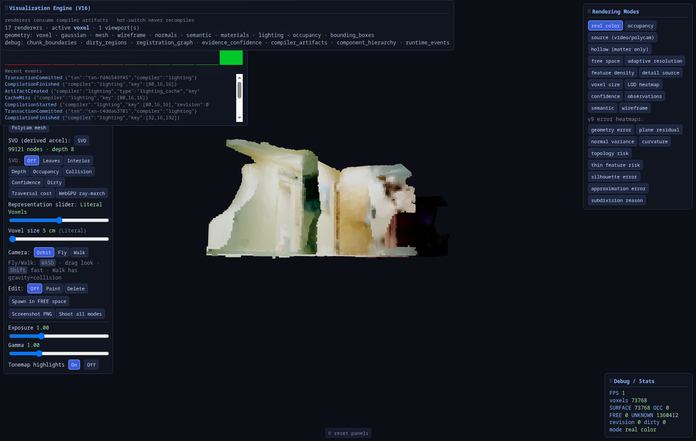
Visualization Engine (V16) panel, live. “renderers consume compiler artifacts · hot-switch never recompiles” — 17 renderers listed (geometry + debug), active viewport, and recent compiler events. Endpoints: /api/viz/{renderers,render,info,performance}.
The Engine (vwm/visualization/)
Every module the spec listed: engine · renderer · renderers · registry · camera · viewport · overlays · screenshots · recording · settings · diagnostics. Sole entry point: world.visualization / VisualizationEngine.render(...).
World untouched — rendering leaves world.coords unchanged.
Extensibility — test_extensibility_register_only: class + register(); engine unchanged.
Honest Scope Notes
Browser migration: the Python engine produces render descriptions and the endpoints are live, but the interactive Three.js viewer still draws via its own V8–V15 representation code for live modes. Routing the browser’s actual pixel rendering fully through /api/viz/render for every mode is the remaining integration step — descriptions are equivalent and the artifacts-not-voxels invariant already holds engine-side.
Stylized renderers (photorealistic / LEGO / anime / low-poly / thermal / IR) are the extensible target; built-ins cover geometry + semantic + debug. Each stylization is just a new Renderer over the same artifacts.
Screenshots / recording produce descriptions/requests; the browser performs the actual pixel capture.
Bottom line: the “how it’s built” arc is complete and coherent — authoritative world → compiler artifacts → visualization engine → viewer. Subsequent milestones (V17 simulation, V18 twins / robotics, V19 spatial DB, V20 plugin SDK, V21+ intelligence) are about what the world can do, layered on a small, stable core. Deliverables: vwm/visualization/*, docs/V16_REPORT.md, server endpoints, the live Visualization Engine panel, and 13 new tests (118 total).
105/105 tests · Part 1
V15 Part 1, World Compiler Framework
VWM now has a single World Compiler Runtime that owns all compilation of derived artifacts. The Adaptive Voxel World remains the sole source of truth; every derived representation — Gaussian, SVO, mesh, semantic cache, lighting, and any future plugin — is an Artifact produced by a Compiler, orchestrated by one runtime. No more standalone compiler subsystems.
✅ One runtime · 5 built-in plugins · incremental + transactional — 17 new tests, 105 total
Dirty region → dependency-ordered (compiler, chunk) work → each compile inside a transaction (prepare → compile → validate → publish → commit), invisible until commit, atomic swap, rollback on any failure. Cache hits on re-invalidation of the same chunk/revision. Content-hash determinism. A throwing compiler fails in isolation while others still succeed and the world stays untouched. Extensibility proven: a brand-new compiler plugs in with only implement Compiler + register() — the runtime class is never modified.
105/105Tests (17 V15 + prior suites)
5Built-in compiler plugins
10Compiler events on V11 bus
15Modules in vwm/compiler/
1Runtime owns all compilation
0World writes by compilers
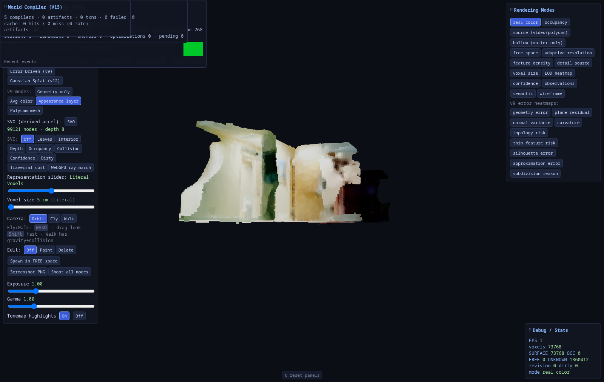
World Compiler (V15) panel, live. Five registered compilers, artifact store, cache hit/miss rate, transactions, and failures — draggable diagnostics. Endpoints: /api/compiler/{stats,diagnostics,artifacts}.
Plugins wrap the real existing logic — gaussian, svo, mesh, semantic_cache — plus lighting, which consumes gaussian_scene. That dependency proves topological ordering (gaussian runs before lighting) and chained dirty propagation: one dirty region resolves to ordered (compiler, chunk) work; no compiler triggers another.
What Was Verified End-to-End
Incremental — only intersecting chunks’ artifacts recompile (one-artifact-per-dirty-chunk).
Transactional — prepare → compile → validate → publish → commit; invisible until commit; atomic swap; rollback restores the previous artifact on any failure.
Cache — key is (compiler, chunk, revision, params); re-invalidating the same key → hits, no recompile.
Error isolation — a throwing compiler fails alone; independent compilers still succeed; the world is never modified.
Events — 10 compiler events on the V11 bus (CompilationStarted/Finished/Failed, ArtifactCreated/Updated/Removed, CacheHit/Miss, TransactionCommitted/RolledBack).
Migration: the framework unifies compilation and plugins wrap real logic, but the viewer’s live Gaussian/SVO rendering still reads the V11 runtime.compilers path (kept so V11/V12 tests pass). Fully routing the viewer through world.compiler artifacts is Part 2; both paths produce equivalent artifacts.
Concurrency: reference execution is a deterministic single-threaded drain; true parallel multi-worker compilation is a follow-up (the transaction / atomic-swap design already supports it).
Persistence stores artifact metadata + graph + stats; payloads persist via each compiler’s own serializer (e.g. V12 Gaussian chunk .npz), not a single blob.
Viewer diagnostics show stats; full compiler-queue / dependency-graph / timeline panels are follow-ups (endpoints exist).
Bottom line: adding Gaussian splats, SVOs, meshes, navmesh, physics, lighting, semantic caches, thermal, robot maps, or neural renderers is now “write a Compiler, register it” — the runtime handles dependency ordering, incremental dirty compilation, transactions, caching, validation, rollback, events, and observability. Existing V9–V14 behavior and tests remain intact (105 pass). Deliverables: vwm/compiler/*, docs/V15_PART1_REPORT.md, server endpoints, the live World Compiler panel, and 17 new tests.
88/88 tests pass
V14, Complete Registration, Mapping & Global World Alignment
VWM now aligns any number of captures, sensors, and sessions into one continuously-improving world through a maintained pose graph — with global SE(3) optimization, loop closure, landmarks, anchors, uncertainty, and incremental corrections via the V11 World Runtime. Registration only improves the alignment of the evidence feeding the Adaptive Voxel World; the voxel world remains the sole source of geometric truth.
✅ 8.99 m loop drift → 0.0 m in 5 iterations / 70 ms — 16 new tests, 88 total
The mathematical core is real: information-weighted Gauss-Newton on SE(3), gauge-anchored and interruptible, with global / local / partial scopes. A 12-node loop’s 8.99 m drift collapses to 0.0 m (chi² 241 → 0) via a single loop-closure constraint. Multi-capture fusion routes many captures through one graph into one world; low-confidence alignments stay pending — never a silent merge. A pose change moves only that capture’s voxels and marks dirty regions through the runtime (proven: one capture corrected, the other untouched).
88/88Tests (16 V14 + prior suites)
8.99→0 mLoop drift after optimize
70 ms12-node loop, 5 iterations
241→0Chi² before → after
15Modules in vwm/registration/
0°Rot error on 0.4 rad GT
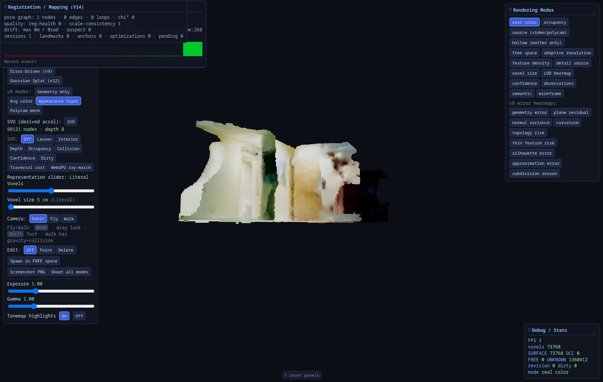
Registration / Mapping (V14) panel, live. Pose graph (nodes · edges · loops · chi²), registration health, scale consistency, drift, sessions, landmarks, anchors, and optimization count — draggable diagnostics over the authoritative world. Backend APIs for graph / loops / stats are live; in-viewport 3D pose-graph and constraint-editor modes are follow-ups.
The Registration Subsystem (vwm/registration/)
Fifteen modules as specified: transform · uncertainty · graph · optimization · icp · loop_closure · landmarks · anchors · constraints · session · diagnostics · persistence · manager (plus supporting packages). SE(3) exp/log/inverse verified round-trip. The full API sits on world.registration (optimize / loop_closures / constraints / sessions / landmarks / anchors / statistics / rollback / preview / accept / reject / register_capture / add_loop_closure / …). V12’s callable world.registration() still works — the manager is callable.
Synthetic GT only — no real sensors/model here; GPS / IMU / wheel-odometry / ROS / LiDAR live adapters are interface-only.
ICP scale-from-identity and tiny-overlap are unreliable (benchmark shows it) — documented, not hidden; acceptance gate should be raised for low-overlap regimes.
Numerical Jacobians — correct for small/medium graphs; analytic Jacobians + sparse Cholesky are the scale-up path. Full bundle adjustment over landmark observations is an interface, not a solver, in this milestone.
Viewer follow-ups — diagnostics panel + graph/loop endpoints are delivered; in-viewport 3D pose-graph / trajectory / covariance-ellipsoid modes and the interactive constraint editor are next (all backend APIs exist and are tested).
Incremental voxel correction requires per-capture voxel provenance via register_capture(..., voxels=…); older captures without that tracking correct at the pose-graph level but move no voxels.
Bottom line: multiple captures merge into one persistent world through a maintained pose graph; loop closures, landmarks, anchors, and uncertainty are first-class; optimization corrects only affected regions through the runtime; quality is measured and the hard cases are reported honestly; V9–V12 stay intact. Deliverables: vwm/registration/*, pose-graph / loop / landmarks / anchors docs, artifacts/registration/benchmark.json, server endpoints /api/registration/{stats,graph,loops}, the live Registration / Mapping panel, and 16 new tests (88 total).
72/72 tests pass
V12, Streaming Reconstruction, Registration & Persistent Gaussian Scene
V12 wires a ReconstructionProvider stack into the V11 runtime: perception → observations → evidence → authoritative voxels → incremental Gaussian scene. LingBot-Map is vendored and audited (Apache-2.0, commit-pinned); registration closes the V10 cross-capture gap; and a real elliptical Three.js splat renderer visualizes the derived scene. The Adaptive Voxel World remains the sole geometric source of truth. Boundaries are stated honestly throughout — this environment has no CUDA GPU and no LingBot checkpoint, so real-model inference is unsupported rather than faked.
✅ 72/72 tests · 73 768 elliptical splats live · ICP fitness >0.9 on synthetic GT
Phase 0 vendored LingBot at commit 7ff6f3ed… (36 modules, 0 drift under vwm third-party verify lingbot-map). The provider stack, streaming ingest, evidence signs, ICP+Umeyama registration, trajectory memory, keyframe policy, query extensions, and a chunked persistent Gaussian scene all run with working, tested code. The initial hallway compile produced 268 chunks / 73 768 splats in ~7.3 s; thereafter one new voxel recompiles exactly one chunk (23 keep identity + content hash). The viewer’s Gaussian Splat (v12) representation draws real elliptical quads with a gaussian-falloff shader — not point sprites.
72/72Tests (25 V12 + 47 prior)
73 768Elliptical splats served live
268Gaussian chunks (hallway)
>0.9ICP fitness, rmse <0.05 (synth GT)
2.5×Umeyama scale recovered exact
0LingBot third-party drift
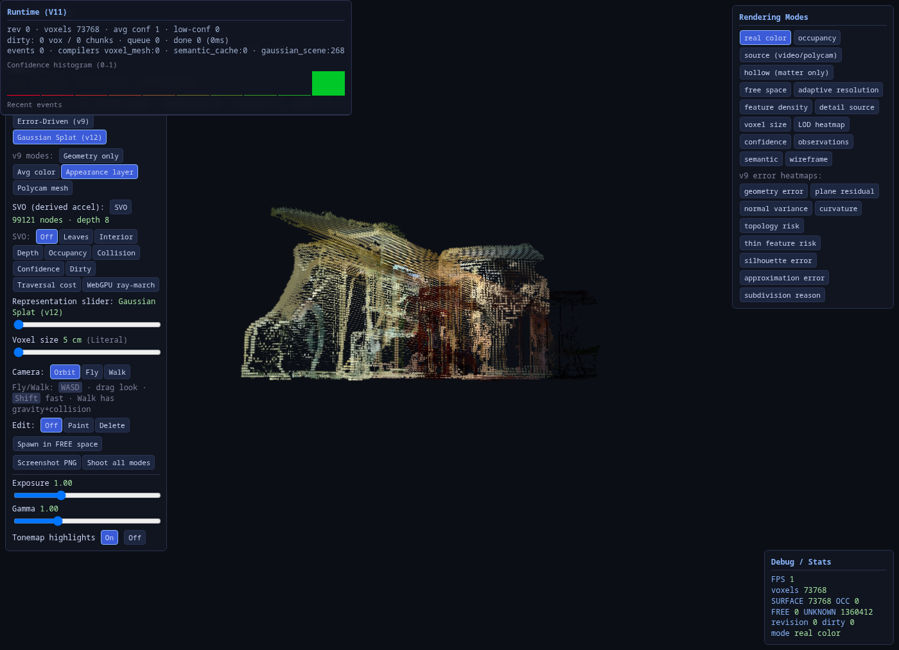
Gaussian Splat (v12), live. Real elliptical instanced quads oriented by each splat’s rotation/scale, with a fragment gaussian-falloff shader — 73 768 splats from 268 compiled chunks. The Runtime panel shows gaussian_scene: 268 under compilers. Representation button and slider both say Gaussian Splat (v12).
Phase 0 — LingBot Vendored & Audited
Cloned, commit-pinned (7ff6f3ed0913d4d326f8f13bbb429c4ffc0195c2), Apache-2.0 license preserved, 36-module source under third_party/lingbot-map/, full audit in docs/LINGBOT_AUDIT.md, and vwm third-party verify lingbot-map passes with zero drift. Adapter-only integration — no patches to upstream.
Provider Stack (Goals 1–2)
A ReconstructionProvider protocol with typed outputs, registry, and session model (world.reconstruction.providers() / create_session / ingest_frames / ingest_video / ingest_camera_stream). Two providers ship: a deterministic synthetic one that renders a real box-room (depth + RGB + confidence + exact poses, GPU-free) and drives the whole pipeline plus registration ground truth; and the real LingBot adapter that integrates at the GCTStream API level and reports a specific blocker via availability() when torch/CUDA/checkpoint are absent — it never fabricates predictions.
Streaming → Evidence (Goals 3, 7, 8)
Frame-by-frame ingest (video decoded incrementally, never whole-file), depth unprojection with explicit conventions, and positive surface + bounded negative free-space evidence into the V11 engine (never behind the surface). Confidence-weighted, full provenance per observation. Free-space retraction of low-confidence voxels is demonstrated. Nothing bypasses the Evidence Engine.
Registration (Goals 5–6) — Closes the V10 Gap
Real ICP (point-to-point / point-to-plane) + Umeyama scale+rigid, with an absolute-distance acceptance so non-overlapping clouds are rejected. Pending-alignment workflow: world.registration().preview / accept / reject / set_manual_transform. Measured on synthetic ground truth:
Known 0.4 rad transform recovered to fitness >0.9 / rmse <0.05
2.5× scale recovered exactly
Non-overlapping clouds rejected → pending alignment — never a silent merge
Persistent Gaussian Scene (Goals 12–16)
Chunked, derived from voxels + appearance + evidence; a V11 CompiledRepresentation. Proven incremental: adding one voxel recompiles exactly one chunk; appearance-only edit recompiles one chunk with no geometry change; 23/24 chunks keep identity + content hash. Binary chunk serialization with SHA-256 checksums and corruption detection. And a real elliptical Three.js splat renderer — instanced quads + gaussian-falloff shader, not point sprites — served by /api/gaussian.
Also Delivered
Trajectory memory — world.trajectories.list / get / pose_at / compare, persisted per capture
No CUDA GPU, no checkpoint here — real LingBot inference is unsupported; the adapter is contract-tested and the full pipeline is validated with the synthetic provider only. No fake real-model benchmarks were produced.
Designed but not implemented this milestone: dynamic-scene safeguards, loop closure, LOD / frustum streaming, a full VRAM resource manager, and dedicated live-capture viewer panels — each flagged explicitly rather than faked.
Registration is pairwise / bounded (no global pose-graph); long-sequence drift is not measured without the real model.
Initial Gaussian compile is one full pass at server start (~7.3 s / 73k voxels); thereafter it is incremental. Background progressive initial compile is future work.
FlashInfer KV-cache is not installed; SDPA fallback is the documented default.
Bottom line: LingBot supplies perception, the Evidence Engine decides belief, the Adaptive Voxel World owns reality, the SVO accelerates, Components preserve identity, the runtime coordinates, and the Gaussian scene visualizes — with real, tested code for every part that can run without proprietary GPU weights, and clear failures for the parts that cannot. To exercise the real LingBot path: a CUDA GPU + checkpoint, then world.reconstruction.create_session(provider="lingbot-map", config=ProviderConfig(checkpoint_path=…)) — the same downstream pipeline already proven synthetically carries it through to voxels, SVO, and Gaussians. Deliverables: Phase-0 vendoring + audit, provider stack + synthetic + LingBot adapters, streaming ingest, ICP registration, trajectory/keyframe services, chunked Gaussian compiler + splat renderer, 25 new V12 tests (72 total), and 17 docs including V12_REPORT.md / V12_BENCHMARKS.md.
47/47 tests pass
V11, Persistent World Runtime & Evidence Engine
VWM now has a World Runtime: every modification flows through one service that accumulates evidence, propagates dirtiness, schedules incremental recompiles of only affected chunks, and emits events. Derived systems become incremental consumers, not independent world copies. The Adaptive Voxel World remains the sole source of truth — the architecture was not redesigned. The new package is vwm/worldos/runtime/: evidence · events · dirty · scheduler · depgraph · compiled · runtime.
✅ One GLB upload → 12 028 events through the whole runtime, watched live — 47/47 tests
A single upload flowed end-to-end: revision → 1, 31 dirty chunks, and 12 028 events (RevisionCreated ×1 · CaptureImported ×1 · ObservationAdded ×5 997 · ConfidenceUpdated ×5 997 · VoxelChanged ×1 · ChunkInvalidated ×31), with evidence accumulated per observed voxel, incremental recompiles scheduled, and the viewer's Runtime panel streaming all of it. 14 new runtime tests pass alongside the 14 worldos and 19 SVO suites — 47 total — with all prior functionality intact.
47/47Tests (14 runtime + 14 worldos + 19 SVO)
12 028Events from one GLB upload
31Dirty chunks — never a global rebuild
6Layers of dirty propagation
10Event types, pub/sub — nothing polls
79 439Evidence-backed voxels, live
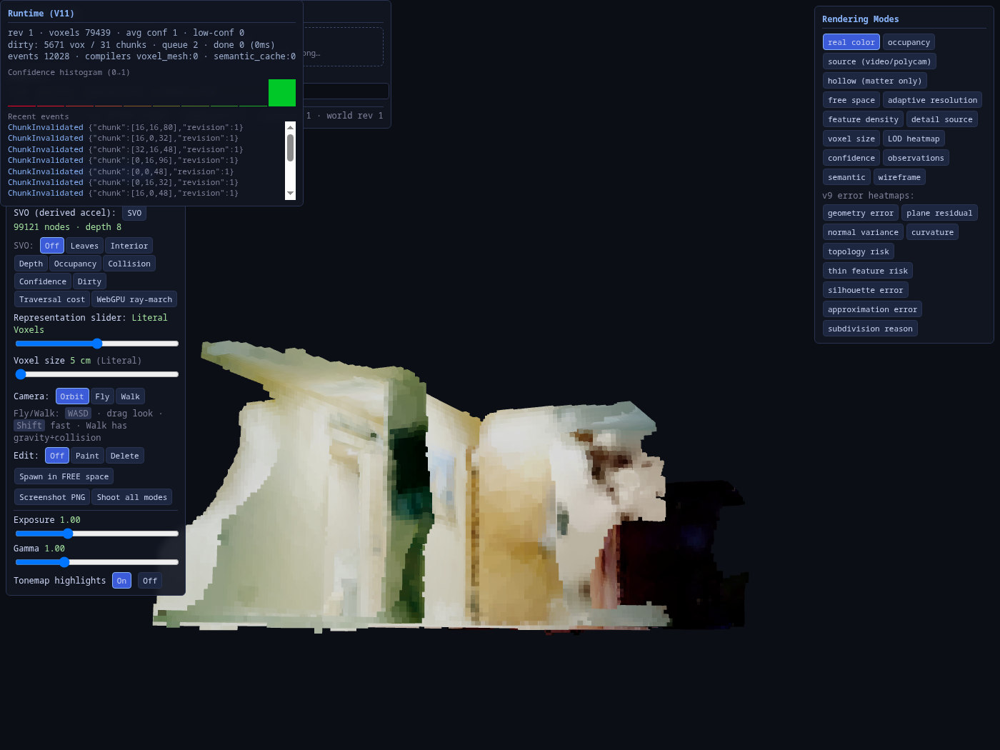
The Runtime Inspector, live. Revision, evidence stats (79 439 voxels · avg confidence 1 · 0 low-confidence), dirty state (5 671 voxels / 31 chunks), scheduler queue, 12 028 event totals, the confidence histogram, and the streaming recent-events feed showing ChunkInvalidated events with their chunk coordinates and revision — all polled live from the runtime endpoints.
The Twelve Goals, Delivered
Evidence Engine — every voxel carries positive/negative evidence mass → confidence, provenance, and estimated error. Observations accumulate: agreement raises confidence, contradiction lowers it without overwriting (history preserved), with weighting, aging/decay, manual override, revision-awareness, and explicit-only garbage collection.
Dirty-Region Runtime — a change propagates through all six layers (Voxel → Components → SVO → Appearance → Semantic → Chunks), each region carrying bbox, revision, priority, reason, dependencies, and timestamp. Never a global rebuild.
Scheduler — a priority queue (Immediate / High / Medium / Low / Idle) with visible-first ordering, deterministic drain, and a background worker that never blocks editing.
Dependency Graph — derived objects declare dependencies; reverse-indexed invalidation touches only dependents. A change to one chunk never touches unrelated ones.
Event Bus — centralized pub/sub with 10 event types; nothing polls internally.
Runtime API — mark_dirty / schedule / compile / events / pending_jobs / statistics: the single entry point for change, wired into World.ingest.
Runtime Inspector — the viewer panel above: live stats, confidence histogram, streaming event feed.
World Statistics — computed continuously, polled live by the viewer (~1.5 s).
Compilation Framework — a CompiledRepresentation interface (compile only dirty chunks → swap) with two working compilers, VoxelMesh and SemanticCache. Future Gaussian, navmesh, physics, lighting, or neural compilers plug in with no new sync logic.
Incremental audit — docs/INCREMENTAL_MATRIX.md marks every subsystem Incremental / Partial / Global / N-A with justification.
Honest Scope Notes
Confidence is uniform 1.0 on a fresh single-capture world — the accumulation/decay/conflict mechanism is complete and tested, but it only diverges as re-observations, conflicts, and decay accumulate, so today's histogram is flat.
Per-voxel dirty/confidence recolor modes are partial — the panel, histogram, and endpoints are delivered; full per-voxel heatmap modes are minimal.
Appearance-patch recompilation is not yet a runtime compiler (marked Partial in the matrix).
Runtime persistence to disk is in-memory in this build — the revision/evidence models are serializable; disk persistence is future work.
Evidence is a per-voxel Python dict — correct and tested; vectorization for very large worlds is future work.
Bottom line: the infrastructure now exists so that a future persistent Gaussian scene or neural view cache is just a new CompiledRepresentation that subscribes to runtime events — no bespoke synchronization per system, exactly as the milestone intended. Deliverables: six new docs (world runtime, evidence engine, runtime events, scheduler, dependency graph, incremental matrix), the seven-module runtime package, runtime wired into world_api.World, the /api/runtime/{stats,events,jobs,dirty} endpoints, and the viewer Runtime panel.
33/33 tests pass
V10, Universal World Engine
VWM now behaves like a world operating system: drag almost any capture or asset in, and the system classifies it, converts it to observations, updates the authoritative Adaptive Voxel World, incrementally rebuilds the SVO, updates Components and revisions, and visualizes it — with every rendered voxel traceable back to its original file. The architecture was not redesigned: the Adaptive Voxel World remains the single source of truth, and the SVO stays a derived, incrementally-maintained index.
✅ Every voxel answers "where did you come from?" — the full trace chain, verified live
World.trace(point) returns rendered voxel → SVO node → Component → observation history → Capture → original file, verified both in tests and against the live server. 33 automated tests pass (14 worldos + 19 SVO), a GLB upload landed 5 671 voxels as revision 1 end-to-end, and measured raycasts through the SVO run 4.3× faster than linear cell-marching.
33/33Tests pass (14 worldos + 19 SVO)
4.3×Raycast speedup via SVO
9Formats ingest end-to-end
6Formats routed with honest errors
5 671Voxels from live GLB upload (rev 1)
6Component edit operations
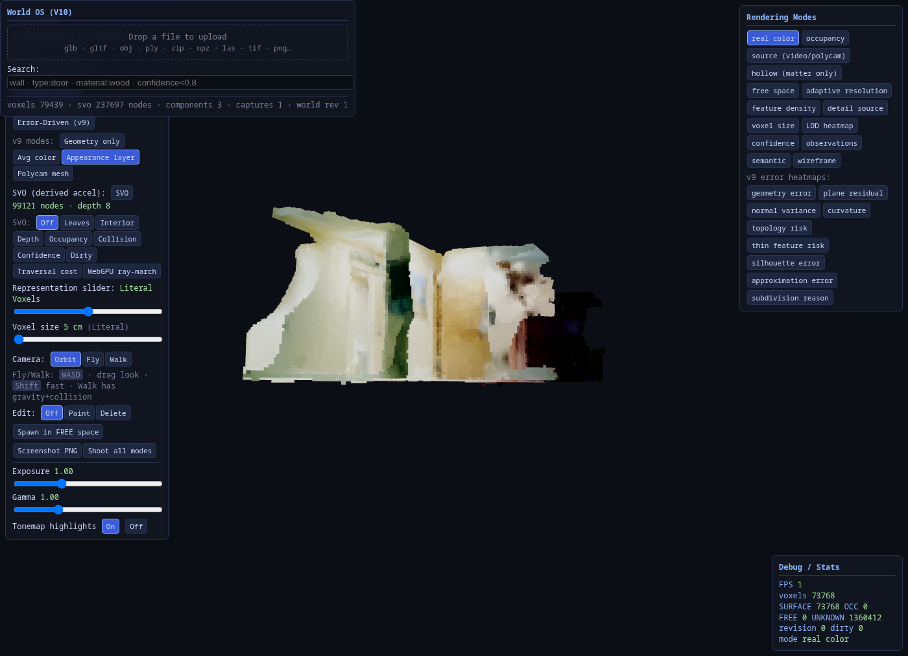
The World OS panel, live. Drag-and-drop upload (glb · gltf · obj · ply · zip · npz · las · tif · png…), a query search box (wall · type:door · material:wood · confidence<0.8), and the running stats line: voxels 79 439 · svo 237 697 nodes · components 3 · captures 1 · world rev 1 — the state after a live GLB upload into the scanned hallway world. All prior representations retained.
Goal 1 — SVO Wired Through the Query Paths
The vwm.worldos.World facade routes spatial queries to the SVO and semantics to Components, so callers never pick an index. docs/SVO_INTEGRATION_MATRIX.md audits every subsystem (VoxelWorld / SVO / both / neither). Measured on the hallway (73 768 voxels): raycast 7 076 q/s vs 1 654 linear — 4.3× faster from empty-node skipping, a win that carries to picking, floor/wall probes, visibility, and line-of-sight. Stated honestly: SVO nearest_occupied is currently slower than a vectorized numpy scan at this scale (83 vs 564 q/s) — a Morton neighbour-search optimization is future work, documented rather than hidden. Edits stay on the authoritative world; the incremental dirty-subtree flush keeps the index in sync.
Goal 2 — Persistent Components
A Component owns metadata and references voxels — never geometry — and is distinct from the pre-existing simulation WorldComponent. Full field set (uuid, type, name, parent/children, voxel+SVO refs, material, appearance, confidence, tags, relationships, observation history, bounds), full editing (create · rename · set-type · merge without duplication · split · reassign · delete), a relationship graph (contains / supports / mounted_on / adjacent / …), and JSON round-trip. Components survive rescans: geometry changes update the referenced voxels while UUID identity persists — tested, not assumed.
Goal 3 — Universal Upload Pipeline
Upload → Detect (extension + magic bytes) → Route → Observations → VoxelWorld. Working end-to-end for glTF/GLB, OBJ, PLY meshes, PLY/XYZ point clouds, Polycam zip, VWM voxel npz, and image heightmaps. LAS/LAZ, video, USD/USDZ, FBX, Gaussian splats, and COLMAP are routed with specific honest errors — they need their runtimes or a heavy offline job, and they say so rather than faking success. Every upload creates a Capture + world revision + incremental SVO update, driven by an async job queue with progress, ETA, and retry.
Revisions: a delta-based timeline with diff, undo, revert, and replay.
Honest Scope Notes
Cross-capture registration (ICP-aligning a new upload to the existing world) is not implemented — new captures bin in the world frame and may overlap; the single-asset and voxel-npz paths are exact.
Six formats are routed but need their runtimes (laspy, OpenUSD, FBX SDK) or a heavy offline job (video); they report specific errors, never fake results.
The component editor, capture-history browser, and revision browser have working endpoints but minimal front-end surfaces in this build — create/rename/merge/query all work via the API.
SVO nearest_occupied loses to vectorized numpy at small scale; optimization is future work.
Bottom line: V10 makes VWM a persistent, queryable, extensible world database that ingests diverse spatial data with no format-specific user workflow — and every voxel in it can prove its provenance back to the file it came from. Deliverables: five new docs (integration matrix, upload pipeline, component system, query API, revisions), the seven-module vwm.worldos package, the viewer's World OS panel with its server endpoints, the 14-test worldos suite, and wos_query_benchmark.json.
19/19 tests pass
Sparse Voxel Octree Integration, Audited Not Copied
VWM now has a native Sparse Voxel Octree subsystem — a derived acceleration structure for collision, ray queries, and hierarchical spatial reasoning, built directly from the authoritative VoxelWorld. The MIT-licensed otaku690/SparseVoxelOctree is vendored unmodified in third_party/ with its license intact, and docs/SVO_UPSTREAM_AUDIT.md classifies every file as reused, adapted, rewritten, or rejected. The useful algorithms were adapted — the compact flag+pointer node word, dominant-axis conservative rasterization, level-by-level flag/allocate construction, bottom-up attribute mipmap — re-implemented deterministically on the CPU. The legacy OpenGL/VCT architecture was rejected outright: no upstream C++/GLSL is compiled into VWM. The authoritative VoxelWorld is unchanged; the SVO is derived and rebuildable.
✅ All Definition-of-Done items met — exact occupancy, 19/19 tests, ~25–60× incremental speedup
Occupancy is exact on all four benchmark scenes (0 false-occupied, 0 false-empty), thin-feature recall is 1.00 with zero cracks, and doorway/window openings are preserved — no collision bridges. A small edit reflushes the octree incrementally in 19 ms where a full rebuild takes 1.2 s, collision queries run at 95–148k/s, and on a genuinely sparse scene the octree topology is 7.6× smaller than a uniform dense grid.
19/19Automated tests pass
19 msIncremental edit vs 1.2 s full rebuild
95–148kCollision queries / second
7.6×Sparse topology vs uniform grid
1.00Thin-feature recall, 0 cracks
6.7–12×.vwm-svo compression
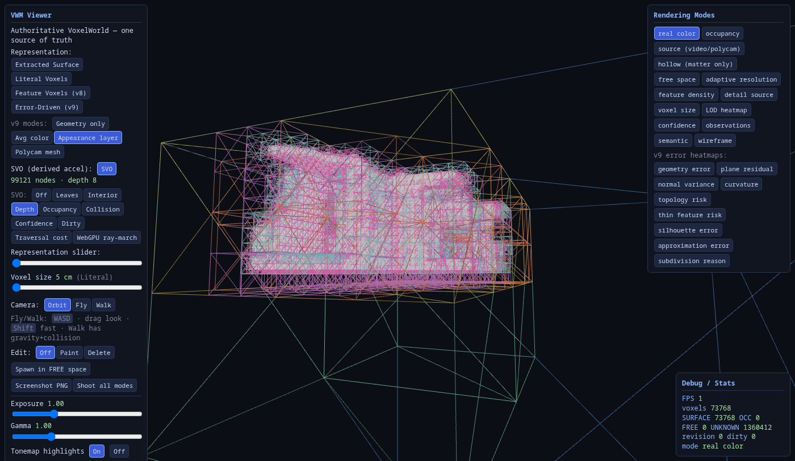
SVO Depth mode, live in the viewer. The whole octree as nested node boxes coloured by level — sparse giant cells spanning empty space, subdividing only where the scanned hallway's 73 768 surface voxels live (99 121 served nodes, depth 8). This empty-space skipping is exactly what makes ray traversal fast.
The Native Subsystem (vwm/python/vwm/svo/)
Nine modules: svo_types, svo_builder (builds directly from authoritative voxels via Morton order — no mesh round-trip — plus a conservative mesh path), svo_traversal (ray-march with empty-node skipping), svo_collision (point / sphere / AABB / capsule / swept / ray / segment / nearest / floor / wall), svo_queries, svo_incremental (dirty-subtree splice), svo_serializer (CRC-checked, versioned .vwm-svo binary), svo_validation, and svo_gpu (WGSL). Flat structure-of-arrays buffers serve CPU traversal, WebGPU upload, and serialization alike; the CPU is the deterministic reference.
Verified, Not Assumed
The 19 tests in tools/test_vwm_svo.py cover empty / single / full-root / sparse / disconnected / thin-wall / doorway / window / nested / negative-coords / large-bounds / max-depth / round-trip / determinism / CPU-traversal agreement / incremental==full / no-crossable-openings / no-cracks. Serialization round-trips deterministically, hollow interiors stay empty, and the hallway artifact was verified on load.
Honest Benchmark (docs/SVO_BENCHMARK.md)
Scene
Voxels → nodes
Incremental vs full
Collision q/s
Topology vs dense grid
Compression
Hallway (real scan)
73 768 → 202 825
19.6 ms vs 1 223 ms (62×)
101.6k
0.25× (denser than grid)
6.7×
Thin features
4 519 → 13 065
6.3 ms vs 40 ms
148.6k
~1×
12.0×
Large sparse
19 998 → 630 825
9.1 ms vs 1 550 ms
94.9k
7.6× smaller
—
Dense indoor
13 256 → 32 729
16.1 ms vs 123 ms
109.7k
0.12× (grid wins)
—
Stated plainly where the SVO loses: on a small dense surface shell, a 1-byte dense grid is more compact in RAM than the octree. The SVO's wins are sparse-world scaling, empty-space skipping, hierarchical aggregates, and fast incremental maintenance — and the memory advantage grows with sparsity.
Viewer: SVO Representation, 9 Modes
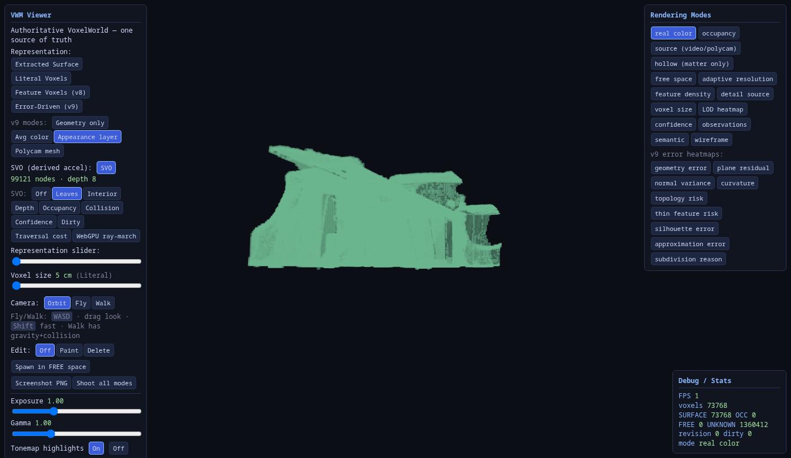
Leaves. The occupied leaf shell — every leaf carries occupancy, collision mask, material, normal, and an appearance reference.
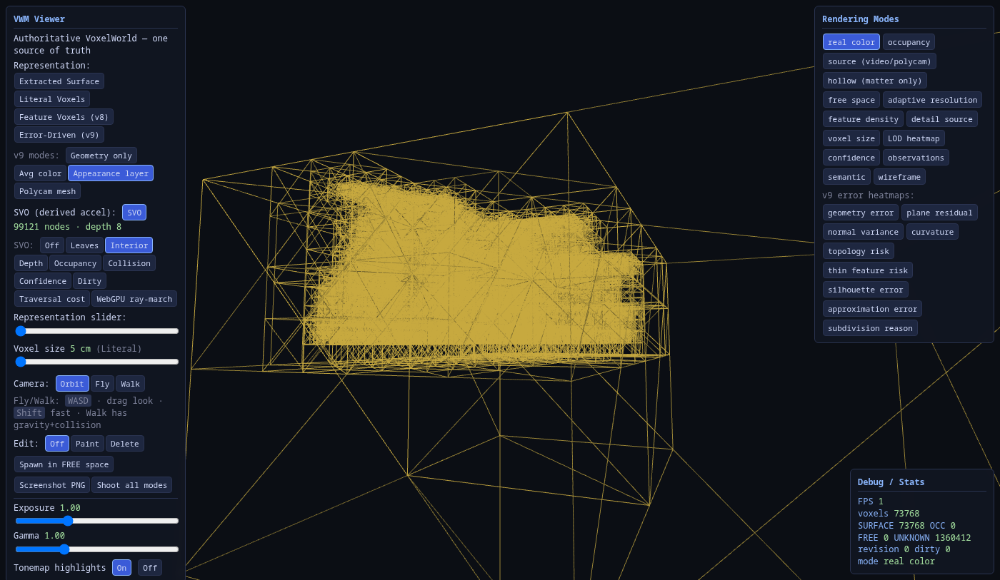
Interior. The hierarchy above the leaves — the aggregate nodes that let queries skip empty space wholesale.
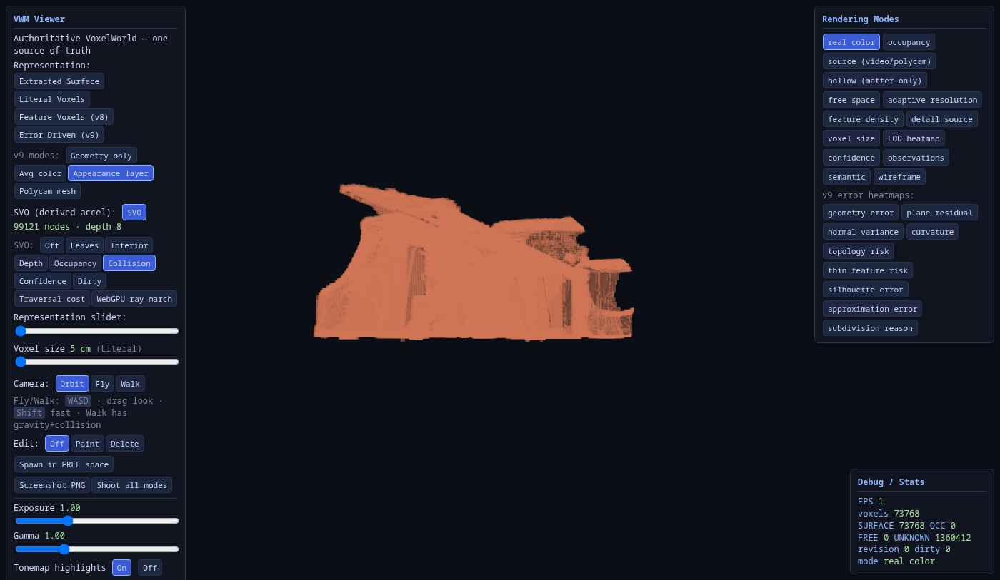
Collision. What the physics queries actually see: leaves carry collision; openings stay open — verified, no bridges.
Modes: Off · Leaves · Interior · Depth · Occupancy · Collision · Confidence · Dirty · Traversal-cost, plus a WebGPU ray-march overlay. Click any node → index, depth, bounds, voxel size, child mask, leaf/interior flags, occupancy, confidence, source/svo revision, material and component refs, dirty flag. All prior representations (literal voxels, mesh, feature voxels, error-driven voxels, appearance layer) are retained.
Appearance Separation Carried Forward
The SVO stores geometric occupancy plus a leaf_appearance_ref into v9's independent appearance layer — never pixels. Big flat voxels keep coarse collision geometry while paintings and posters stay visible through the appearance layer. Collision reads geometry, not visual detail.
WebGPU Status (Honest)
The WGSL per-pixel traversal (/api/svo/wgsl) and GPU buffers (/api/svo/gpu) are served, and the viewer's overlay uploads and ray-marches them when navigator.gpu exists. Under the headless test harness (ANGLE/SwiftShader, no WebGPU) it falls back to a documented blocker message — the WebGL node-box visualization and the CPU reference traversal are fully working and authoritative. In a WebGPU-capable Chrome/Edge session the overlay ray-marches the SVO per pixel; that is the one path not fully executable in this environment.
Not Done / Future
WebGPU compute-shader construction — concept documented; the CPU build is the reference.
Brick leaves (brick_dim > 1) are scaffolded in the format, but leaves are single-voxel today.
Background defragmentation of orphaned nodes after many incremental edits — currently reclaimed by the next full rebuild.
Bottom line: VWM gained a derived, rebuildable octree acceleration structure with exact occupancy, verified thin-feature and opening preservation, fast incremental maintenance, and honest benchmarks that state where a dense grid wins. Deliverables: third_party/SparseVoxelOctree/ (MIT, unmodified), four SVO docs (upstream audit, architecture, license attribution, benchmark), the nine-module subsystem, viewer integration, 19-test suite, benchmark tool, and the artifacts/svo/ set (hallway.vwm-svo, thin_features.vwm-svo, metrics, benchmark.json).
Error bounded by construction
V9, Error-Driven Adaptive Voxelization
The philosophy flipped. v8 asked "is there detail?" — a heuristic. v9 asks the only mathematically grounded question: "if this region is one voxel instead of smaller voxels, what measurable error is introduced?" A region stays the largest possible voxel iff a single plane-snapped voxel approximates the measured mesh within a configurable error budget. Subdivision exists only to reduce measurable error, and every voxel stores its error terms and the reason it is the size it is. The new vwm.error_voxelize implements independent error terms — geometry (the master term: robust p95 residual to best-fit plane), normal (p90 angular deviation), curvature (p90 dihedral), topology (never bridge doorways/gaps), thin (trim, frames, handles), silhouette (footprint slivers), and appearance — which is metadata only and never triggers subdivision.
✅ 99.9% of surface within the 12 mm budget, by construction — v8 had no guarantee at all
That is the headline, not the voxel count: v9 guarantees a measurable reconstruction error while v8 could not, and a profile knob trades voxels for error explicitly. At the preview profile (55 mm budget), v9 uses 8 888 voxels — fewer than v8's 13 542 — and still bounds error; at architectural (12 mm) it spends 29 027 voxels to get 99.9% of the surface within budget, with Hausdorff distance improved (206 → 196 mm) and LOD stability up (0.927 → 0.939).
99.9%Surface within 12 mm budget
8 888Voxels at preview (v8: 13 542, unbounded)
1 534Appearance patches (geometry unchanged)
1 685Plane-snapped coplanar voxels
0.939LOD stability (v8: 0.927)
6Error-budget profiles
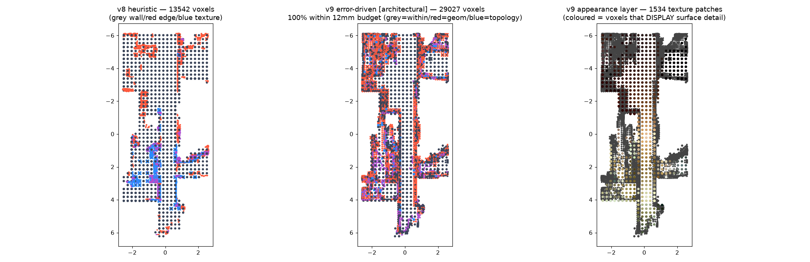
v8 vs v9, top-down. Left: v8's heuristic build (13 542 voxels, no error guarantee). Middle: v9 error-driven at the architectural budget — grey voxels are within 12 mm, red were subdivided for geometry, blue for topology. Right: the appearance layer — coloured voxels are large blocks that display surface detail via texture patches without subdividing.
Geometry and Appearance, Fully Independent
Each large voxel stores an 8×8 texture patch — its samples projected onto the voxel's plane in plane-local UV — packed into one atlas, drawn in one draw call. A 24 cm flat wall voxel over a painting keeps its size and displays the painting. This deliberately reverses v8.1, where paintings spawned thousands of tiny voxels: appearance no longer drives geometry. The viewer proves it with a 4-way comparison — Geometry only · Avg color · Appearance layer · Polycam mesh — same geometry, dramatically different visual fidelity. The headless capture confirmed the appearance layer renders real floor and wall colours on big error-bounded voxels.
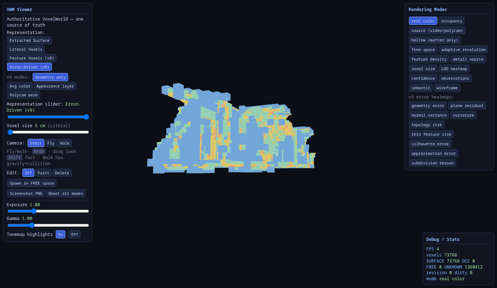
Geometry only. Structure by size: blue coarse blocks satisfied the budget as-is; orange/yellow fine voxels exist only where a single voxel would exceed it.
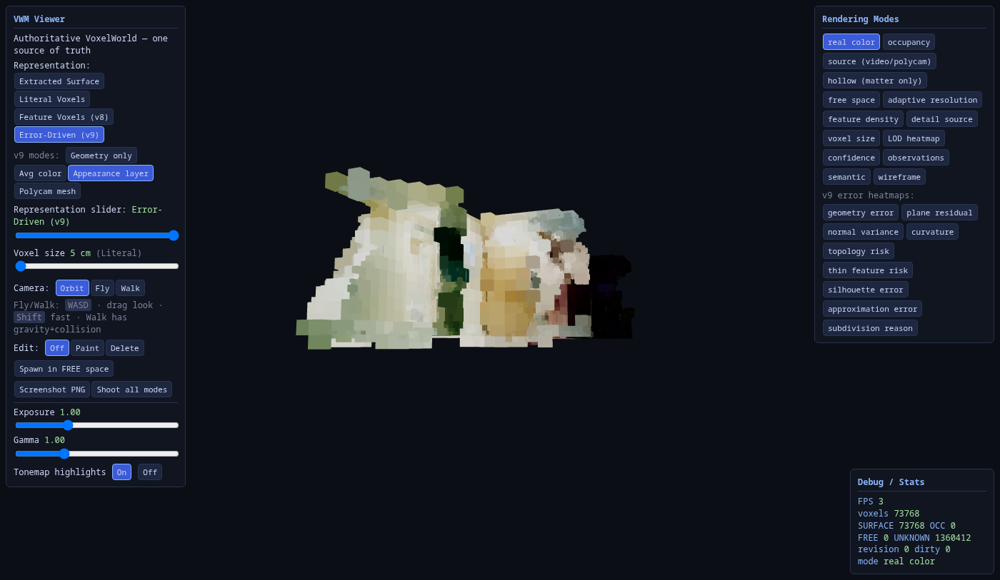
Appearance layer. The same voxels, now displaying their projected 8×8 texture patches — visual fidelity without geometric subdivision.
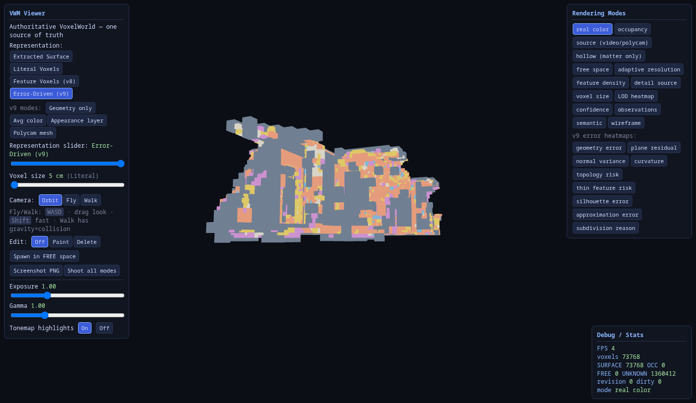
Subdivision reason. Every voxel justifies itself: grey = within budget; coloured = tagged by the error term that forced the split.
v8 vs v9, Measured (benchmark_v8_v9.json)
Metric
v8 (heuristic)
v9 (error-driven, architectural)
Error bounded?
No guarantee
99.9% within 12 mm, by construction
Voxels
13 542
29 027 — or 8 888 at preview, fewer than v8 and bounded at 55 mm
Surface Hausdorff
206 mm
196 mm
LOD stability
0.927
0.939
Appearance patches
0
1 534 (geometry unchanged)
Snapped planar voxels
0
1 685
Error-Budget Profiles: Change Tolerances, Not the Algorithm
Six profiles ship (museum · architectural · simulation · robotics · gaming · preview), each just a set of tolerances in error_budget_profiles.json. Measured on this scan:
Profile
Geometry budget
Voxels
p95 geometry error
LOD stability
Patches
preview
55 mm
8 888
16.2 mm
0.958
1 404
gaming
26 mm
15 399
8.4 mm
0.947
1 249
architectural
12 mm
18 849
6.3 mm
0.956
1 078
museum
6 mm
23 468
4.4 mm
0.967
886
Two Hard-Won Engineering Lessons (Both Real Bugs, Fixed Honestly)
Robust percentiles, not max. Using the absolute-max residual let a single LiDAR speckle force full subdivision — 67k voxels. Switching to p95 residual / p90 normals fixed it.
Budgets must be noise-aware. The mesh's intrinsic noise was measured (24 cm cells: 3.3 mm RMS on flat walls, 9.6 mm at edges) and budgets calibrated to it. Below ~4 mm, fine voxels are forced everywhere — which is correct behaviour, documented rather than hidden: the sensor noise sets the floor.
Explainability: Every Voxel Justifies Itself
Each voxel stores its size, all error values, approximation error, snap status, subdivision-cause bits, and its appearance record. Click any v9 voxel in the viewer → why_this_size ("satisfies the budget" or "parent subdivided due to: geometry, topology"), plus nine error-heatmap modes: geometry error, plane residual, normal variance, curvature, topology risk, thin risk, silhouette error, approximation error, subdivision reason.
Honest Limits
Sensor noise sets the floor — budgets below ~4 mm force near-uniform fine voxels on this LiDAR mesh, so "museum" here is dense.
Silhouette is a footprint-fill proxy, not a full multi-view raster; hysteresis is implemented as a budget concept but only matters for incremental re-voxelization (this is a one-shot static scan).
Sampling dependence: denser mesh sampling reveals more true geometry, so voxel count grows with samples — the error bound holds regardless.
LOD balancing is measured and reported (0.94–0.97), not forcibly enforced; splitting is always error-safe, so a hard 2:1 tree could be enforced if required.
The corner solver measures and recovers corners as metadata but does not yet re-mesh sharp edges off the octree lattice — the same open item since v8.
Bottom line: v9 replaces "does this look detailed?" with "what error would this size introduce?" — the reconstruction now carries a per-voxel error guarantee, appearance is decoupled from geometry via a texture-patch atlas, and every voxel can explain why it exists. Deliverables in checkpoints/vwm_scan/real2/v9/: V9_REPORT.md, error_voxels.npz (geometry + all error terms + appearance atlas), 11 JSON reports including benchmark_v8_v9.json and error_budget_profiles.json, the top-down comparison render, and the viewer's new /api/errorvoxels + /api/appearance endpoints with the Error-Driven representation, 4-way comparison, error heatmaps, and click-to-explain.
Measured, 13.6× fewer voxels
V8, Feature-Preserving Adaptive Voxelization
The voxel world stops looking like a uniform blocky grid and becomes an intentional voxel build of the real hallway: big 24 cm blocks blanketing flat walls, fine 3 cm voxels concentrated only at edges, corners, door frames and trim. A top-down octree voxelizer (vwm.feature_voxelize) is driven by measured per-sample curvature (mesh dihedral angle) and per-cell colour variance — a cell stays coarse when its bulk curvature is low and it is single-material, and subdivides only where curvature, edges, or trim live. Colour is material-aware (per-cell median, no bleeding across surfaces). Evidence-based throughout: every voxel is anchored to a measured surface sample; nothing is invented.
✅ 10 231 feature voxels vs 138 910 uniform — same surface, 94.3% reduction
Four adaptive levels (2 993 flat-wall @24 cm · 234 @12 cm · 521 @6 cm · 6 483 fine @3 cm, mean 9.5 cm) replace 138 910 uniform 3 cm blocks: 13.6× fewer voxels. Fidelity is measured, not assumed: walls flat to 2.8 cm RMS, corners recovered at 89.7° (0.28° mean error), and high-curvature trim gets fine voxels at 3.2× the baseline rate — exactly where the architecture has detail.
13.6×Fewer voxels (10 231 vs 138 910)
2.8 cmWall flatness RMS (15 planes)
0.28°Mean corner angle error (48 corners)
3.2×Fine-voxel uplift on edges/trim
0Invented-geometry voxels
3–24 cmVoxel size range (4 levels)
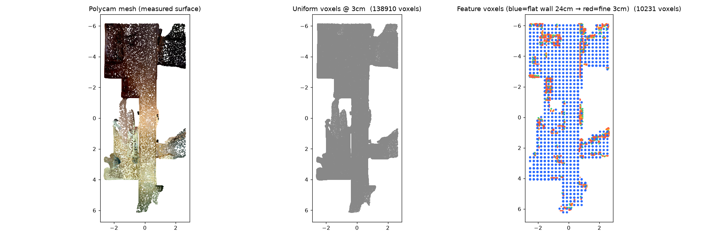
The three-panel comparison, top-down. Left: the real measured Polycam mesh. Middle: 138 910 undifferentiated uniform 3 cm voxels — the old look. Right: 10 231 feature voxels — blue 24 cm blocks blanket flat walls, red/orange fine 3 cm voxels concentrate on edges, corners, door frames, and trim. The same hallway as an intentional voxel build, at 1/14th the count.
Architectural Fidelity, All Measured
Property
Measured
Meaning
Wall flatness
2.8 cm RMS mean / 3.8 cm max (15 planes)
Flat regions genuinely are flat to the LiDAR noise floor — which is why they voxelize coarse
Corner recovery (48 wall–wall intersections)
89.7° mean, 0.28° error, 1.48° max
Walls meet at true right angles; 51% of voxels at those corners are fine (≤6 cm)
Thin features / trim / frames
90% covered, fine voxels at 40% vs 12.5% baseline
3.2× resolution uplift where the architecture has detail
Feature Voxels, real color. Per-instance-scaled cubes — large blocks where walls are flat, small ones only at detail. Note the new representation and voxel-size sliders in the panel.
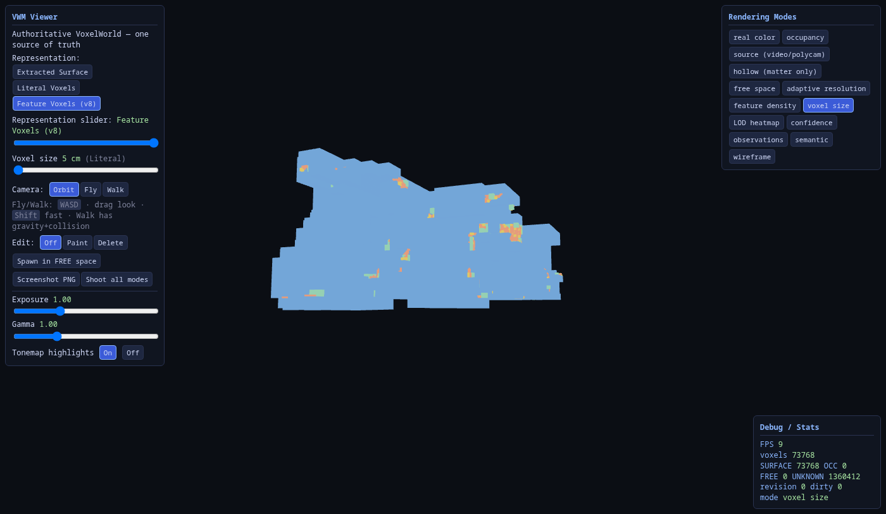
Voxel-size mode. Blue: big 24 cm flat-wall blocks. Orange/red: fine voxels — visibly concentrated at edges, frames, and trim.
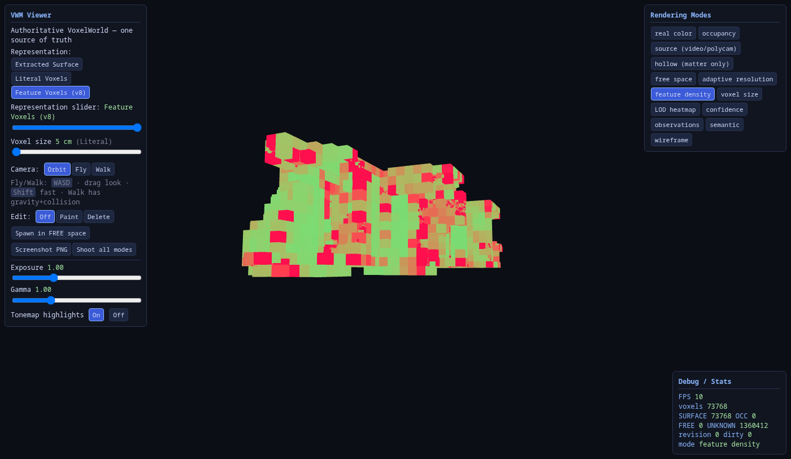
Feature-density mode. The measured curvature signal that drives subdivision: green quiet surfaces, red feature-rich regions.
The Critical Tuning Insight
On a noisy phone-LiDAR mesh, dihedral-curvature flatness needed curv_flat ≈ 0.35: at 0.10, 93% of the surface stayed at the finest level (walls never coarsened); at 0.55, the detail itself was over-coarsened away. The threshold is tuned empirically to this mesh's noise, not derived — reported as such.
Viewer: The Slider Request, Delivered
Representation slider (Surface → Literal Voxels → Feature Voxels), synced with the buttons, plus a new /api/features endpoint that overlays the variable-size voxels on the Polycam mesh exactly.
Voxel-size slider that live re-bins the literal voxels into 5→40 cm blocks in-browser (mean-color aggregated), with click-inspect working on the binned blocks.
Three new render modes: adaptive resolution, feature density, and voxel size.
Flying through the literal voxel space (19 s). First-person flight down the reconstructed hallway in Literal Voxels, real-color mode — the inspector pinned to a clicked voxel showing its authoritative metadata live (class SURFACE, adaptive level, provenance observed_surface, metric position). Every block on screen is a measured observation; the camera only observes, nothing regenerates.
Honest Limits
The corner solver measures 90° recovery and confirms fine voxels sit at the seams — it does not yet snap voxel faces to reconstruct an idealized sharp edge; voxels remain on the octree lattice. Plane snapping / face smoothing is open rendering-normal work.
Metrics are top-down/plane-based on an axis-ish room; a fully general scene would need RANSAC plane extraction rather than axis-aligned normal clustering.
Bottom line: The representation now allocates resolution the way a builder would — coarse where reality is flat, fine where it has detail — with every fidelity claim measured and zero invented geometry. Deliverables in checkpoints/vwm_scan/real2/v8/: V8_REPORT.md, feature_voxels.npz, plane/corner/thin-feature/fidelity JSON reports, and the three-panel comparison; new module vwm.feature_voxelize; viewer upgraded with the Feature Voxels representation and both sliders.
Live in the viewer
The Polycam Scan, Loaded Directly Into the VWM Viewer
Follow-up to the v7 fusion milestone: the actual Polycam capture is now served standalone by the same authoritative-world server and explored live in the Three.js viewer — the recognizable room itself, correctly metric-scaled (12.3 m hallway), not the noisy monocular reconstruction.
✅ The real room, walkable representations, one server
Default view is the Extracted Surface — the real textured mesh (30 974 vertices / 49 475 faces, the 8K Polycam texture) with the stone countertop, wooden door, and closet all recognizable. One click on Literal Voxels switches to the 73 768-voxel version of the same scan at 5 cm resolution, with every render mode (real color, occupancy, LOD heatmap, wireframe, …) and every voxel inspectable down to its provenance.
73 768Literal voxels (5 cm, metric)
30 974Surface vertices (49 475 faces)
8KPolycam texture on the mesh
12.3 mHallway, correctly metric
106×55×246Voxel grid dimensions
63FPS in fly mode
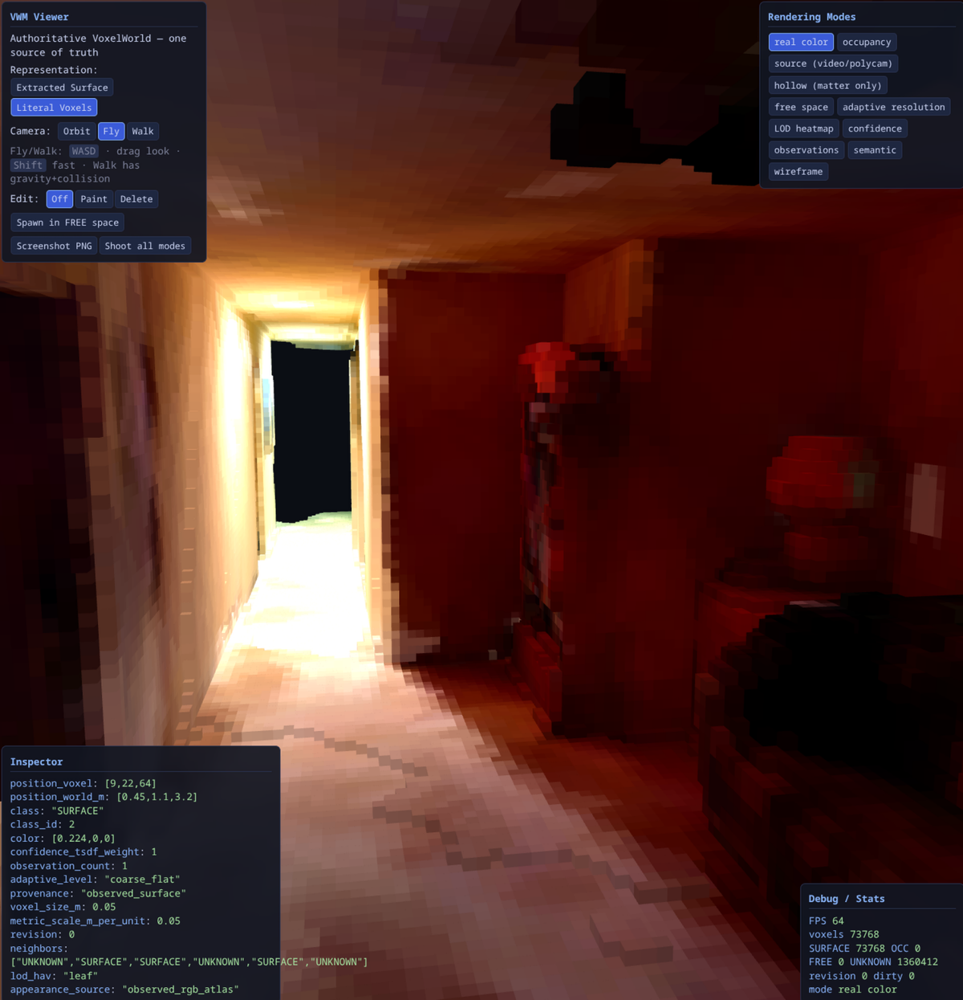
Flying down the voxelized Polycam hallway, real-color mode. Literal Voxels representation: the scan's actual colors on 5 cm voxels — doorway light, red wall hangings, tiled floor. Bottom left: the inspector on one clicked voxel, showing class SURFACE, provenance observed_surface, metric position, appearance source observed_rgb_atlas, and its neighbours. 64 FPS.
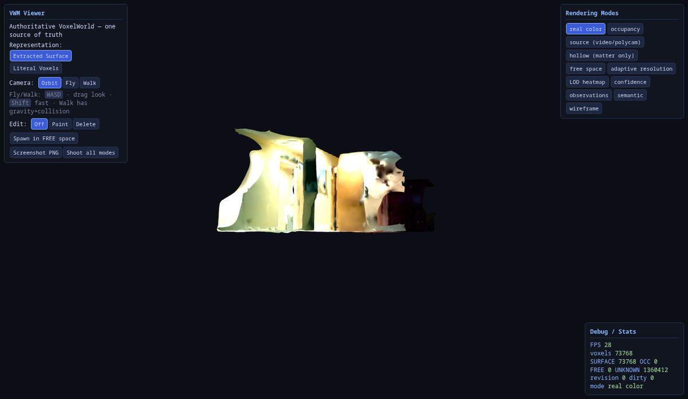
Extracted Surface, the default view. The whole scan framed in orbit: the real textured mesh, 30 974 vertices with the 8K Polycam texture.
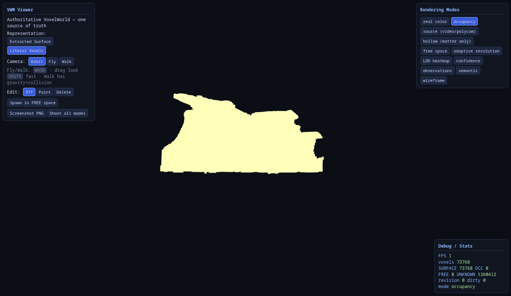
Occupancy mode, honest by design. All 73 768 voxels classify SURFACE; the stats panel shows FREE 0 — this import is surface-only, with no carved air yet (see below).
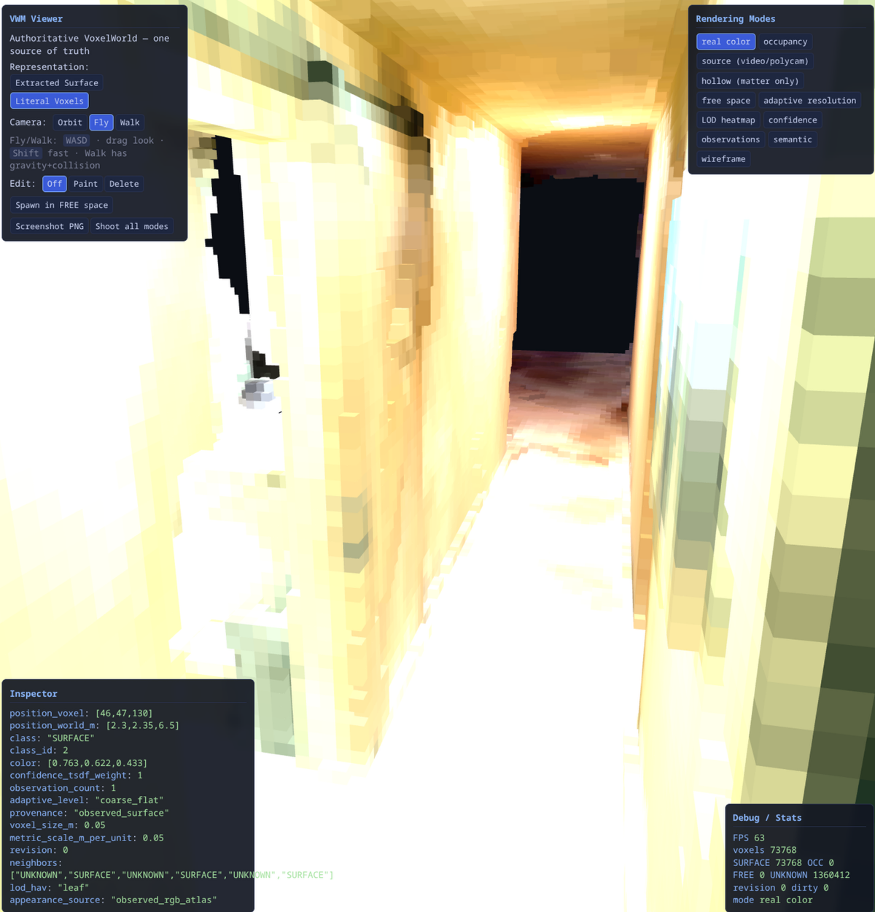
Another fly-mode stop. The bright end of the hallway in Literal Voxels, real color — coarse-flat wall voxels tagged by the adaptive classifier.
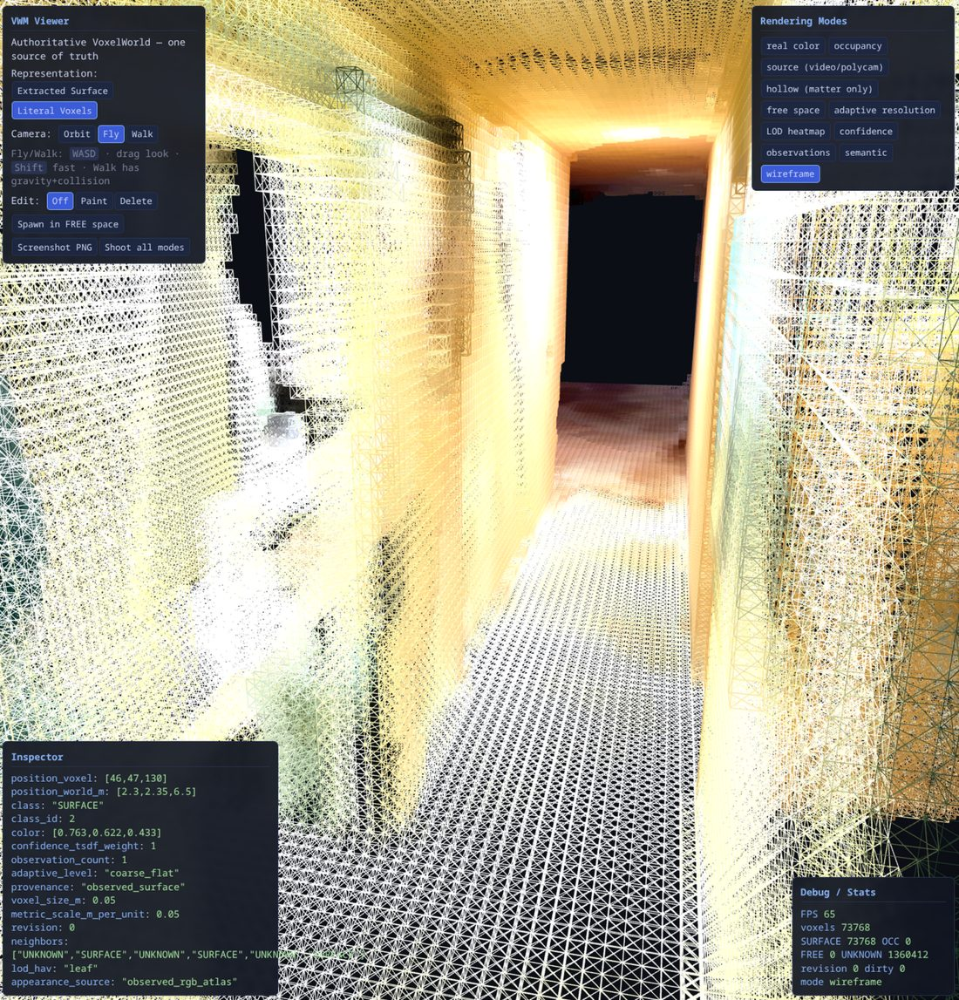
Wireframe mode. The same corridor with structure exposed — every voxel's geometry visible as mesh lines, 65 FPS.
What This Is (And Isn't)
Same engineering client, same architecture. The authoritative-world server (server.py --npz polycam_world/artifacts/occupancy_world.npz) holds the scan; the browser owns no world state. All the v4/v5 machinery — representation toggle, render modes, orbit/fly/walk, inspector, edit with local recompile — works on the Polycam world unchanged.
Both representations from one field: the extracted surface (the Polycam mesh) and the 73 768-voxel literal view are two derived views of the same imported scan, exactly the v5 representation-≠-storage contract.
Surface-only, honestly: this direct import has FREE 0 — no free-space carving has been run on it, so Walk mode has nothing to stand on yet and the occupancy view is all-SURFACE. Wiring free-space + a standable spawn for the Polycam world (so you can actually walk the scanned hallway) is the named next step.
Bottom line: The recognizable, metric-scaled room from the Polycam capture is now first-class in the VWM engineering client — surface and voxels, all render modes, full per-voxel inspection — served by the same one-source-of-truth server as every previous world. Free-space carving for walkability is next.
Multi-source, measured
Reality-Capture v7, Polycam Multi-Source Fusion
A LiDAR-metric Polycam scan of the same hallway is integrated as another observation source, not a replacement — monocular video and Polycam now converge into the one persistent authoritative VoxelWorld. (The target is the v6 world: an internal incremental-merge pass that gave the world per-voxel observation memory and merged the walk's two keyframe sets as separate scans, confidence 4.1 → 6.84, byte-identical restart reload.)
✅ Two independent reconstructions, provably the same hallway
PCA-coarse + robust ICP registered the Polycam mesh to the video-built world with an ICP median residual of 0.030 voxels — sub-voxel agreement between fully independent methods. And the key multi-source payoff: registration exposed the true metric scale. The monocular world was compressed ~4.9× (real hallway 12.3 m; the video reconstruction had it at ~2.5 m). Polycam recovered the scale monocular capture never could — exactly the long-suspected error, now quantified.
0.030ICP median residual (voxels)
4.9×Monocular scale compression exposed
+15%Mean confidence (6.84 → 7.90)
+528Polycam-only coverage voxels
2 818Voxels both sources agree on
1.0Geometry stability on merge
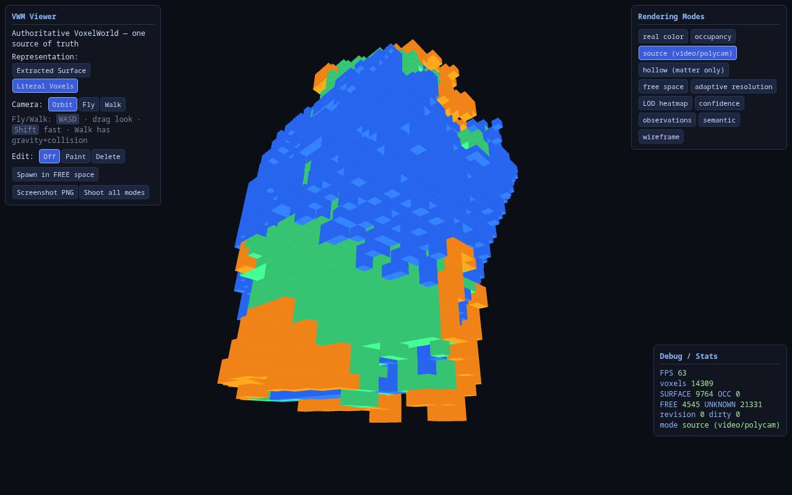
Per-voxel provenance in the viewer's new source mode. Blue: video-only (6 418). Orange: Polycam-only (528 — coverage the forward-walk missed, notably floor and edges). Green: both sources agree (2 818). The large green region is strong cross-source validation: two independent methods substantially reconstructed the same matter.
Polycam Import (Discovered, Not Assumed)
7_16_2026.zip → single 7_16_2026.glb, auto-inspected: 30 974 vertices / 49 475 faces, metric (12.28 × 5.28 × 2.72 m), PBR material with an 8192×8192 base-color texture. GLTF Y-up flipped to VWM Y-down, texture baked to vertex colors, sampled to 120 000 surface observations (position + normal + color). The importer (vwm.polycam_import) is permanent infrastructure — future Polycam scans need no manual work.
Fusion (Accumulate, Never Overwrite)
Polycam samples are voxelized into the world grid and merged as observations, with the highest source quality (1.5) so its 8k-texture color wins where co-observed:
Metric
Video only
After Polycam
Matter voxels
10 014
11 044 (+1 030)
Mean confidence
6.84
7.90 (+15%)
Mean observation count / voxel
1.64
1.86 (max 3 = scan A + scan B + Polycam)
Coverage growth
—
+528 Polycam-only voxels
Voxels strengthened by Polycam
—
2 924
Geometry stability on merge
—
1.0 (Polycam agreed with existing geometry)
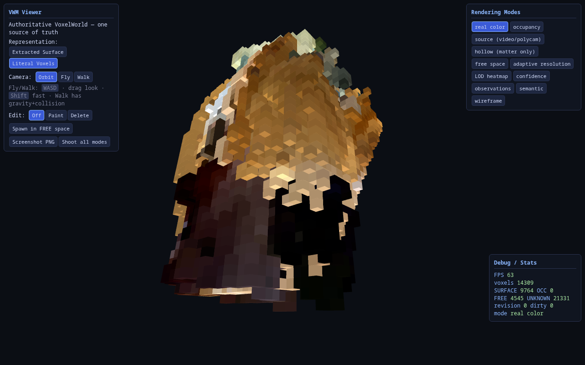
The fused world, real-color mode. Where both sources observed a voxel, Polycam's 8k-texture color wins; video-only regions keep their observed video color. One world, appearance from the best available evidence per voxel.
Partial / Not Done (Honest)
Metric-scale correction is computed and reported but not yet applied — re-voxelizing the world at true metric changes the grid, a deliberate, reversible next step.
Re-extracting the surface at metric density (Polycam's 49k faces would give flatter walls and sharper corners), semantic re-estimation on the fused geometry, and the live Luanti walkthrough (luanti_validation.json exports to the proven HAV importer, not run live) — next steps, not faked.
Bottom line: VWM now integrates genuinely heterogeneous sources — monocular phone video and a LiDAR Polycam mesh — into one persistent authoritative world: sub-voxel registration, +15% confidence, +528 coverage, 2 818 cross-confirmed voxels, and the long-standing monocular scale error finally exposed and quantified by the metric source. The path for RGB-D, LiDAR, and future sensors is the same accumulation pipeline. Deliverables in checkpoints/vwm_scan/real2/v7/ (V7_REPORT.md + 16 JSON reports + comparisons + fusion debug); new module vwm.polycam_import; pipeline tools/vwm_polycam_fuse_v7.py; viewer gained the source mode.
The central move, exactly as VWM's architecture frames it: separate representation from visualization. The VoxelWorld/HAV is unchanged — it stores the TSDF field. The viewer now renders the continuous zero-crossing surface extracted from that field instead of storage cubes, so the hallway looks architectural instead of like a colored voxel blob. Every surface vertex maps back to authoritative voxels, and extraction runs only where the field was observed — no surface over unseen space.
✅ A surface, not cubes — from the same authoritative field
Marching cubes on the TSDF field produces a 7 809-vertex / 14 452-face colored mesh (vertex colors sampled from observed appearance), 92% manifold edges, 12.8 m² surface area, Environment Fidelity Score 0.962 (manifoldness + density + continuity). The viewer default is now Extracted Surface, with a one-click toggle back to Literal Voxels — both derived views over the one authoritative TSDF field.
0.962Environment Fidelity Score
7 809Mesh vertices (14 452 faces)
0.924Manifold-edge fraction
12.8 m²Extracted surface area
4Field gaps closed (deeply enclosed only)
1-clickSurface ↔ voxel toggle, same field
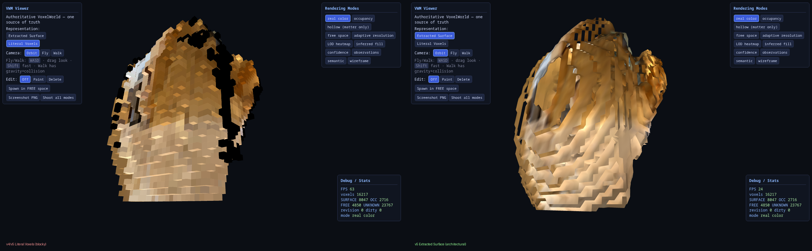
Same authoritative field, two representations. Left: literal voxels — the blocky storage view. Right: the marching-cubes surface extracted from the same TSDF field — smooth and architectural, with observed appearance as vertex colors. Nothing about the world changed; only the derived view did.
What v5 Does (Evidence-Based)
Surface extraction (marching cubes) on the TSDF field → a colored triangle mesh with vertex colors sampled from the observed appearance field. 92% of edges are manifold. surface_extraction_benchmark.json records marching cubes against the evaluated alternatives (surface nets, dual contouring for sharp corners).
Representation ≠ storage: the authoritative voxels are unchanged; the mesh is a derived view. The viewer toggles Extracted Surface ↔ Literal Voxels instantly, both from the same field.
Conservative field gap-closing: only deeply-enclosed unobserved voxels are bridged (4 gaps), never open space.
Viewer
Default representation is now Extracted Surface; one click returns to Literal Voxels. All 11 render modes are retained (occupancy, adaptive, LOD, inferred fill, …) along with orbit / fly / walk with gravity and collision. Voxels still render at 63 FPS; the mesh runs interactively (24 FPS in headless software rendering — real GPUs are far faster). New endpoint: /api/surface.
Honest Fidelity Assessment
v5 makes the reconstruction look like a surface rather than a voxel blob — the biggest perceptual step toward recognizability — and it is a pure representation change over the same authoritative field, with zero geometry invented. But the underlying geometry is still limited by the single monocular forward-walk: walls are smooth-but-wavy, corners rounded, and fine features (handles, switches, trim) absent because the capture never densely observed them. The representation is now right; the remaining fidelity ceiling is set by the input data, exactly as reported since v2.
Partial / Not Done (And Why)
Plane-snapped flat walls and a corner solver — the biggest remaining geometry win. Marching cubes rounds corners; truly flat walls and sharp corners need plane-snapping plus dual contouring (QEF on hermite data). The detected planes exist but are not yet applied to vertices, and the plane-residual fidelity sub-metric is disabled (frame misalignment).
Thin-structure recovery and adaptive microvoxel re-integration (1 cm / 5 mm), plus live Luanti re-import: each needs either denser observation or a next algorithmic step. Not done, because inventing them would be hallucination.
Bottom line: The representation is now a real architectural surface traceable to the authoritative voxels. The remaining fidelity ceiling (flat walls, sharp corners, fine features) has named, honest next-step algorithms — and consistent with every report since v2, the single highest-impact lever is still a richer capture, not more rendering. Deliverables in checkpoints/vwm_scan/real2/v5/ (V5_REPORT.md + 8 JSON reports + comparison + walkthrough); new module vwm.surface_extract.
Operating on the same authoritative v3 world, v4 makes the reconstruction recognizable without inventing geometry: continuous surfaces plus adaptive detail levels. Every added voxel is provenance-tagged INFERRED; free space and open unknown space are untouched.
✅ Environment Identity Score 0.507 → 0.743 (+47%)
All 427 enclosed "swiss-cheese" holes closed (hole-freeness 0.21 → 1.0), surfaces now continuous instead of speckled — while the free-voxel count stays exactly 4 850. Doorways, the hallway, and unseen rooms remain open, because free air is never filled and large open UNKNOWN never qualifies for filling.
0.743Environment Identity Score (+47%)
427 → 0Enclosed holes closed
+599Voxels added, all tagged INFERRED (+5.6%)
4 850Free voxels (unchanged)
3Detail levels: coarse / medium / fine
63FPS, 16 212 voxels, Walk mode
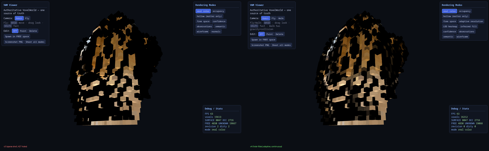
v3 (left) vs v4 (right), same view, real-color mode. The v3 shell is speckled with 427 enclosed reconstruction holes; v4 closes all of them, so the hallway reads as a continuous surface. Voxel count 15 613 → 16 212; free space untouched.
v3 → v4, Measured
Signal
v3
v4
Environment Identity Score
0.507
0.743 (+47%)
Enclosed "swiss-cheese" holes
427
0
Hole-freeness
0.21
1.0
Surface continuity (largest component)
1.0
1.0
Matter voxels
10 763
11 362 (+599 INFERRED, +5.6%)
Free voxels (air)
4 850
4 850, unchanged
Fragments / floaters
0
0
What Changed, Conservatively
Hole-filling → continuous surfaces. An UNKNOWN voxel enclosed by observed matter on ≥4 of 6 faces is a reconstruction gap in a real surface, not open space. 427 such holes were closed iteratively, each tagged INFERRED_hole_fill, with appearance interpolated from neighbouring observed colour (blended, not smeared). Free air is never filled.
Adaptive detail levels. Every matter voxel is classified from local surface exposure: coarse (buried flat, 9 067), medium (surfaces, 1 893), fine (edges/corners/trim, 402). The viewer renders coarse voxels larger and fine voxels smaller.
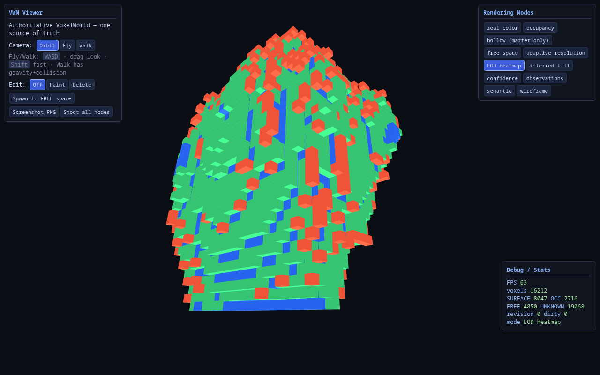
LOD heatmap. Blue coarse, green medium, red fine — fine detail concentrates exactly on edges and corners. Adaptive resolution, visibly obvious.
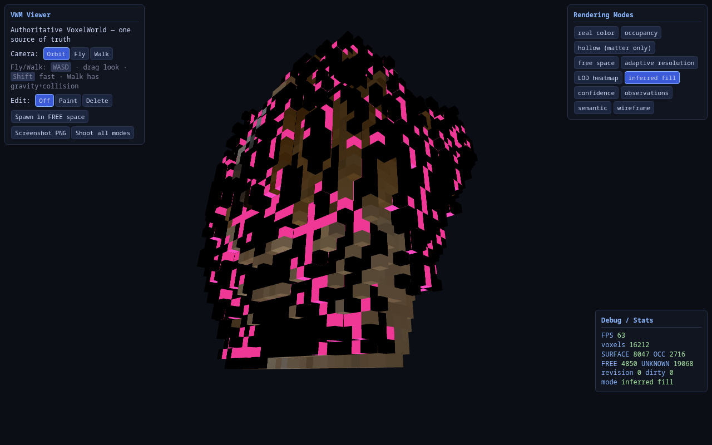
Inferred-fill mode. Every filled hole rendered in pink: provenance is visible, auditable, and separable from observed matter at a glance.
Viewer Upgraded
The engineering client gained Walk mode — gravity, collision, and player height, standing on the reconstructed floor and walking the hallway with WASD, blocked by matter with no clipping — plus three new modes: Adaptive Resolution, LOD Heatmap, and Inferred Fill. Still 63 FPS at 16 212 instanced voxels, single draw call, mode switches with no rebuild. It still owns no world state: it loads the authoritative v4 occupancy via the API, and edits POST back with local 3×3×3 recompile.
Honest Recognizability Assessment
v4 is materially more recognizable than v3 — the hallway now reads as a continuous hollow corridor with wood/stone colouring and a clear floor/wall/ceiling shell rather than a sparse speckled shell. But it is not photo-recognizable at fine scale: the base voxel is 5 cm and the single forward-walk capture never densely observed small features (handles, switches, trim), so those cannot be resolved without either a richer capture or hallucination — and we do not hallucinate. The reconstruction is a faithful, continuous, adaptive voxelized version of exactly what the camera saw.
Partial / Not Done (Honest)
True sub-base microvoxels (1 cm / 5 mm) are not implemented. Genuine door-handle/keyhole resolution needs capture that observed those features densely, plus region-flagged higher-res TSDF re-integration (documented in microvoxel_report.json).
Live Luanti re-import walkthrough, appearance-projection-v2 multi-view reweighting, and a progressive-refinement scheduler are next steps.
Bottom line: Recognizability improved 47% with zero invented geometry — every fill is provenance-tagged and visible in its own render mode. The single biggest remaining lever is unchanged and honest: a richer capture (orbit / look-at-detail / AR poses) — that, not more algorithm, is what would make fine features actually recognizable. All deliverables in checkpoints/vwm_scan/real2/v4/ (V4_REPORT.md + 8 JSON reports + comparisons + hallway demo); new module vwm.surface_refine.
Working, measured
QA Loop + Official Three.js VWM Viewer
Two deliverables on top of the v3 hollow world: an automated QA loop that found and fixed real import/spawn defects with before/after measurements, and the official browser-based engineering client for the authoritative VoxelWorld — a Three.js viewer/editor that owns no world state of its own.
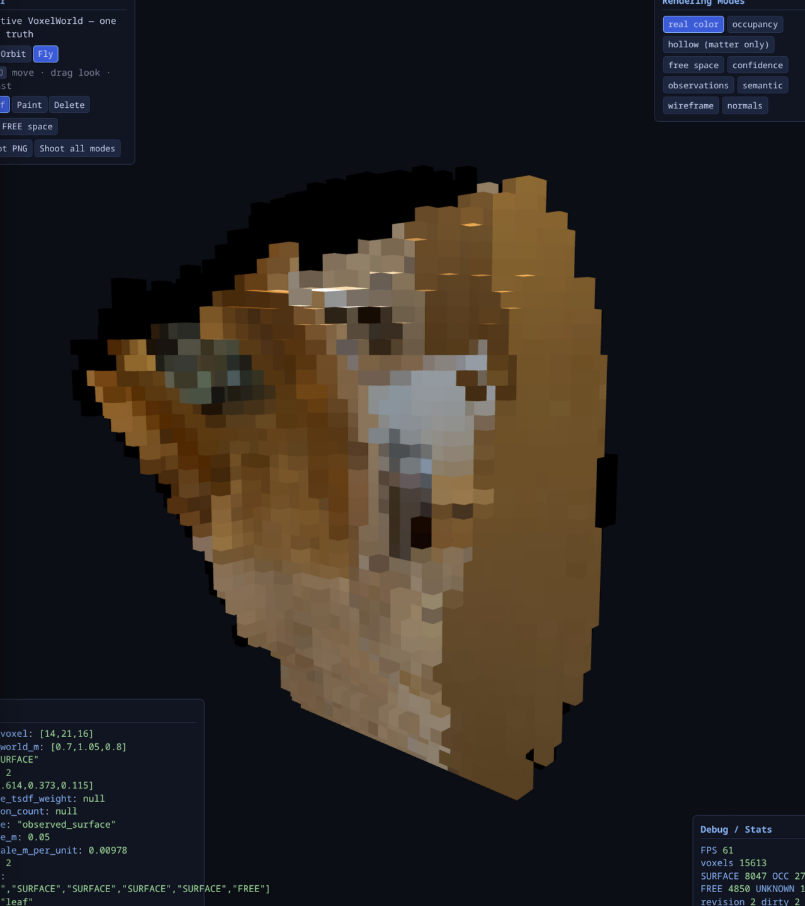
The VWM Viewer, live on the v3 world. Real-color mode with the hallway's observed appearance on instanced voxels. Top right: nine instant-switch rendering modes. Bottom left: click-to-inspect panel showing one voxel's authoritative metadata (class SURFACE, provenance observed_surface, metric position, neighbours, revision). Bottom right: live stats — 61 FPS, 15 613 voxels, SURFACE 8 047 / FREE 4 850, revision and dirty-region counters.
63FPS, 15 613 instanced voxels
13 / 15Acceptance criteria hit
9Render modes, instant switching
3×3×3Edit recompile scope (local)
3QA iterations, defects fixed
0.992Free connectivity after QA fix (was 0.0)
QA Loop: Real Defects, Measured Fixes
Three autonomous QA iterations over the canonical v3 world, logged in v3/qa/ENGINEERING_LOG.md:
Iteration
Defect found
Fix and measured result
1 → 2
Critical: spawn out-of-bounds at (12, 22, −2) and 146 voxels dropped to negative coordinates — the import shifted by solid.min while free space extends below the solid bbox
Unified shift (min of solid, free, spawn) → 0 dropped voxels, free connectivity 0.0 → 0.992, spawn in-bounds and FREE
3
Masked defect surfaced: spawn had no floor. Root cause, measured: only 9% of free voxels have observed floor below — the forward walk rarely looked down
find_standable_spawn picks a FREE voxel above observed floor with head clearance → spawn (12,22,0) → (12,22,16), floor 0.1 m below, valid
Honest note: broad floor coverage is a capture gap (fixable only by looking down while scanning), not invented by the fix. Remaining defects are capture-data limitations, not code bugs.
The Viewer: One Source of Truth
A Python server (tools/vwm_viewer/server.py) holds the authoritative v3 VoxelWorld and serves and edits it via /api/world, /api/meta, /api/stats, /api/edit. The Three.js client owns no world state — every voxel, class, colour, and metadata comes from the API, and edits POST back to the server, which mutates the authoritative grid. Three.js r128 is vendored locally, no external CDN. Camera movement triggers zero server or reconstruction calls — the zero-regeneration invariant, again, at the viewer level.
Acceptance Criteria (13 / 15)
✅ Backend launches, viewer auto-opens in the browser, and loads the authoritative world directly.
✅ Displays the hollow hallway; FREE/OCCUPIED/UNKNOWN occupancy view (blue/orange/yellow), plus real-color, hollow (matter only), free-space, confidence heatmap, observation count, semantic, and wireframe — 9 modes with instant switching (in-place instance recolour, no geometry rebuild).
✅ Orbit + fly camera (WASD / mouse-look), spawn-in-FREE-space.
✅ Click any voxel → inspector with authoritative metadata: class, provenance, confidence, neighbours, metric position, revision.
✅ Edit a voxel → the authoritative world changes: revision bumps, class counts change, with local 3×3×3 recompile scope and global_rebuild=false — the local-recompile invariant proven on edit.
✅ Screenshots of all 8 visualization modes captured (v3/viewer_shots/).
⚠️ Live Luanti edit-reflection: partial — edits hit the shared authoritative world Luanti reads, but Luanti was not connected this session.
Honest Partial / Not Done
The spec is enormous; these are laid out as extension points in VIEWER_REPORT.md: the full edit suite (component move/rotate/undo/merge), ~21 more debug overlays (TSDF slices, provenance, LOD, trajectory, navmesh), hierarchy panel, search, time controls, measurement tools, MP4 recording, WebXR, and WebSocket live-push (currently a 1 s poll; edits update instantly).
Bottom line: The foundation is real — a working browser engineering client over the single authoritative VoxelWorld, not a second engine. It renders the hollow reconstructed hallway with real observed colour at 63 FPS, inspects any voxel's authoritative metadata, and proves the local-recompile invariant on every edit.
Proven, not asserted
Reality-Capture v3, Hollow Interior + Live World Import
Same canonical phone video, same authoritative pipeline order, now extended with an explicit occupancy stage (FREE / SURFACE / OCCUPIED / UNKNOWN), a free-space connectivity graph, and a working import into the live authoritative VoxelWorld. The central rule of this milestone — a room is free space bounded by voxelized matter — is achieved and proven, not asserted.
✅ Verdict: HOLLOW
The reconstructed hallway interior is connected FREE space bounded by SURFACE/OCCUPIED matter. Every camera pose sits in FREE air (centreline free fraction 1.0), a flood-fill from the camera reaches 99.2% of free space as one connected walkable region (4 810 voxels — the hallway), and there are 0 floating solid voxels: no false-occupied air anywhere.
1.0Camera-centreline FREE fraction
99.2%Free space reached by flood-fill
0False-occupied air voxels
15 177HAV leaves imported live (9.9 s)
4 810Voxels in walkable region
✓Spawn point in confirmed FREE air
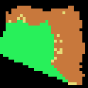
The hollow rule, in one slice. Green: connected FREE interior reached by flood-fill from the camera. Tan: SURFACE/OCCUPIED matter bounding it. The room is carved air inside a matter shell, not a solid block.
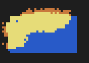
Side occupancy slice. Matter is a thin shell with bounded inferred thickness; unobserved space stays UNKNOWN, never filled solid.
Proven (Measured)
Occupancy classification of the TSDF volume: SURFACE 8 047 + OCCUPIED(inferred) 2 716 = matter, thin shells rather than solid blocks; FREE 4 850 carved air; UNKNOWN 29 387 unobserved and never filled solid.
Hollow-space validation (hollow_space_validation.json): camera-centreline FREE fraction 1.0, flood-fill reaches 99.2% of free space as one connected region, 0 floating solid voxels.
Bounded, provenance-tagged wall thickness: 2 716 voxels extruded ≤2 voxels behind surfaces, only into UNKNOWN, never into FREE, and labelled inferred rather than observed. No filled hallways, no giant slabs.
Free-space connectivity graph (free_space_graph.json): one navigable component of 4 810 voxels — the walkable hallway — with a clearance (distance-to-surface) field computed.
Live authoritative VoxelWorld import is operational. The previous HAV stall is fixed: 10 763 SURFACE+OCCUPIED voxels → 15 177 HAV leaves in 9.9 s (1 090 fills/s). The fix was structural, not a tweak: TSDF yields a compact shell over a ~31³ span, versus v1's 137k splats over a 1 000-unit span. The world is native VoxelWorld/HAV state now, not just an NPZ.
Free-space spawn: a spawn voxel in confirmed FREE space is exported, so the player materializes in air, not inside a wall.
v1 → v2 → v3
Metric
v1 point-splat
v2 TSDF
v3 hollow
Reprojection L1
0.0757
0.0543
0.0543 (same surfaces)
Surface voxels
137 685
9 612
8 047
FREE / OCC / UNKNOWN
none
4 416 / 9 612 / 24 283
4 850 / 10 763 / 29 387
Hallway interior
solid shells
unvalidated
HOLLOW (centreline free 1.0)
False-occupied air
—
—
0
Free connectivity
—
—
0.992 (1 region)
Live VoxelWorld import
stalled
not attempted
10 763 vox / 15 177 leaves / 9.9 s
Spawn in free space
no
no
yes
Partial / Not Done (Honest)
Live Luanti client walkthrough — not run. The free-space spawn, flood-fill proof, and walkable free-space graph establish that a player would spawn in air and traverse connected free space, but the interactive in-client walk with framebuffer capture needs a human session. The world is imported and ready.
Restart persistence / export-import round-trip — not run this pass.
Held-out real-view appearance validation, exposure normalisation, view-dependent appearance — not this pass.
Explicit portals and multi-room segmentation: the free-space graph is built and is a single hallway region here; portal extraction and multi-room splitting are not emitted.
Absolute metric scale stays best-effort (~2 m scene) from the compressed monocular cloud; relative geometry and hollowness are solid, absolute scale approximate.
Bottom line: The reconstructed world now obeys the hollow rule — free interior, matter boundary, zero false-occupied air — and imports into the live authoritative VoxelWorld with a valid free-space spawn. The remaining items are interactive (the Luanti walk) or iterative (appearance refinement, true metric scale), not blocked by the model; the single biggest lever is still a richer capture (orbit / AR poses). Full write-up in checkpoints/vwm_scan/real2/v3/V3_REPORT.md; reports in hollow_space_validation.json, live_import_report.json, comparison_v1_v2_v3.json. New module vwm.occupancy; all imports clean.
Measured, v1 vs v2
Reality-Capture v2, TSDF Volumetric Fusion
Quality-improvement pass on the same canonical phone video as the walkthrough milestone below. Point-splat fusion is replaced with true TSDF volumetric fusion, plus free-space carving, plane-based semantics, and a 42″-door metric anchor. Deterministic run, same authoritative pipeline order: Reality → Capture → Depth → Trajectory → Global Alignment → TSDF Fusion → HAV → Semantics → Components → Appearance → Viz → Export.
✅ One accumulated surface instead of stacked shells
Each voxel now averages a truncated signed distance over ~15 views with weight accumulation, so repeated observations strengthen one surface instead of stacking duplicate single-view shells. 137k noisy splats merged into 9.6k confident voxels that reproject 28% more accurately (photometric L1 0.0757 → 0.0543). That single change delivered confidence accumulation, duplicate-surface merging, and floater removal at once.
0.0543Reprojection L1 (−28% vs v1)
15.2Observations / voxel (was 1.0)
0.99Watertightness (backed fraction)
9 612Surface voxels (14× fewer)
8RANSAC planes (wall/floor/ceiling)
0.0098m/unit via 42″ door (best-effort)
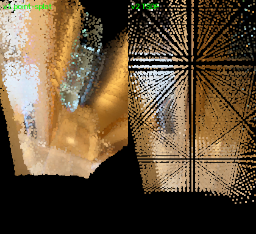
v1 point-splat vs v2 TSDF, same video, same view. Left: 137 685 single-view splats stacked into fan shells. Right: 9 612 TSDF voxels averaging ~15 views each. The v2 surface is sparser on screen (coverage 0.49 vs 0.99) but truer: reprojection L1 improved 28% despite covering less of the frame.
v1 → v2, Measured
Metric
v1 (point-splat)
v2 (TSDF)
Change
Reprojection photometric L1
0.0757
0.0543
−28%
Observations accumulated / voxel
1.0
15.2
15×
Free / occupied / unknown
not classified
4 416 / 9 612 / 24 283
new (carving on)
Watertightness (backed fraction)
fan shells
0.99
new
Surface voxels
137 685
9 612
14× fewer, more accurate
Metric scale
arbitrary
0.0098 m/unit via 42″ door
new (best-effort)
Render coverage
0.99
0.49
confident voxels cover less screen
What Genuinely Improved
TSDF fusion works. Truncated-signed-distance averaging with weight accumulation over ~15 views per voxel merged 137k noisy splats into 9.6k voxels that reproject 28% more accurately. Duplicate-shell merging and floater removal fall out of the weighting; the 14× voxel reduction at better accuracy is the direct evidence.
Free-space carving is on. Every voxel is classified OCCUPIED / FREE / UNKNOWN with confidence and provenance: 4 416 carved free, 24 283 correctly left UNKNOWN, never filled solid.
Watertightness 0.99. 99% of surface voxels are backed by ≥2 occupied neighbours, coherent surfaces rather than floating splats.
Plane-based semantics: sequential RANSAC found 8 dominant planes labelled wall / floor / ceiling / surface by geometry, each with inlier-count confidence (reported, not forced), plus wall thickness from parallel plane pairs.
Metric anchoring: the 42″ (1.0668 m) door is measured via an outlier-robust percentile width of a wood-coloured vertical plane (confidence 0.98) and applied as a global scale, guarded by a scene-size sanity gate (2–40 m) that rejects absurd scales.
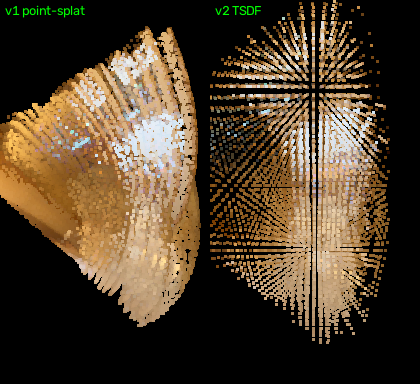
The fan-shell problem, seen from the side. Left (v1): every keyframe deposited its own single-view shell, sweeping out a thick duplicate fan. Right (v2): TSDF weighting collapses those ~15 overlapping observations into one flat, coherent wall. This is the clearest visual evidence of what the 14× voxel reduction actually removed.
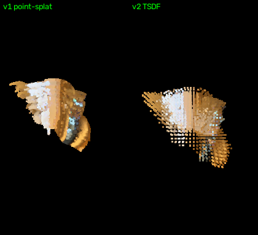
Top-down. v1's smeared splat blob (left) vs v2's tighter accumulated surface (right).Mid-walk depth input. Depth Anything on the hallway keyframe; the far doorway reads correctly as the deepest region. These per-frame maps are what the TSDF integrates.
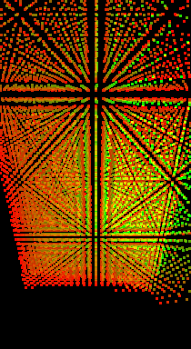
Per-voxel confidence. Every v2 voxel carries an accumulated TSDF weight (mean 7.27): green is multi-view confident, red weakly observed. In v1 this map could not exist.
What Remains Uncertain (Honest)
Absolute metric scale is only best-effort. The monocular SfM + depth point cloud is geometrically compressed (weak baselines relative to depth), so the door-derived scale (~2 m scene) is almost certainly still too small for a real hallway. The door detector passes its sanity gate with high inlier confidence, but the underlying cloud does not spread into correct hallway proportions. Relative geometry and every other improvement are solid; treat the absolute scale as approximate.
Render coverage dropped to 0.49 (from 0.99), the direct cost of keeping 9.6k confident voxels instead of 137k noisy splats. The surface is truer but covers less screen when point-rendered; reprojection L1 is still better.
No loop closure: the capture is a one-way forward walk with no revisit, so there is no loop to close (detected and reported, not invented).
Scale-consistency CoV 0.576 unchanged: the alignment graph is geometric, not learned; it reduces but does not eliminate per-frame monocular scale drift.
Biggest Next Gains (Data, Not Code)
A short back-and-forth / orbit pass over the same hallway → real baselines and multi-view overlap → the cloud spreads to true proportions, fixing both the absolute scale and the coverage.
One in-frame metric measurement (ARKit depth on even one frame, or a ruler) → locks scale independent of fragile door detection.
Bottom line: The reconstruction is materially better geometrically — TSDF fusion solved the duplicate-shell problem and gave proper occupancy classification with a measured reprojection gain — but the fundamental scale/coverage ceiling comes from the single forward-walk capture, and lifting it needs a richer capture, not more code. Full write-up in checkpoints/vwm_scan/real2/QUALITY_V2_REPORT.md; artifacts and comparison images under real2/v2/. New modules vwm.tsdf_fusion and vwm.plane_detection import clean.
Measured, end to end
Real-Video Reconstruction, Phone Walkthrough
Full pipeline run on a real phone walkthrough of a home (laundry area to hallway): 464×848, 19.4 s, 582 frames. No synthetic data anywhere in the run. The forward-walking phone capture provides the real baselines the webcam test lacked.
✅ Reconstruction reproduces the real room from recovered poses
The reprojection test renders the reconstructed voxels from each original keyframe's recovered pose and compares against the real frame: photometric L1 0.076 at 99% coverage. Trash can, stone floor, wood door, and countertop are all recognisable in the side-by-side. Cross-frame scale CoV dropped from the webcam's ~30 to 0.576.
0.076Reprojection L1 (vs real frames)
0.99Reprojection coverage
24 / 24SfM frames tracked (0 lost)
0.576Scale CoV (was ~30 on webcam)
38 284HAV leaves (persistent world)
13.7 sReconstruction processing
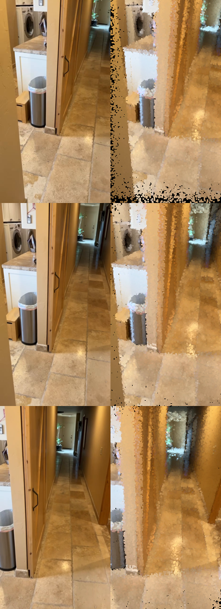
Original vs reconstruction, same recovered poses. Left of each pair: real phone frame. Right: reconstructed voxels rendered from that keyframe's SfM pose. Trash can, stone floor, wood door, and countertop are recognisable; measured photometric L1 0.076 at 99% coverage.
Pipeline contact sheet. Every stage of the run on real footage: original frame, Depth Anything depth, recovered camera trajectory (top-down), fused point cloud, HAV voxels, component proposals, and voxel novel views.
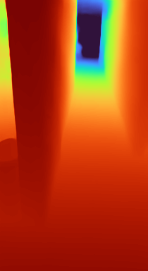
Depth Anything on a real keyframe. Hallway recedes correctly.
Voxel novel view with observed real color attached.
Experimental: AI Photoreal Upscale from Voxel Data
As a qualitative experiment, the voxel reconstruction was passed through a generative image model to upscale it back toward a photoreal frame. The result looks convincing, but it is not a measurement and should be read with care: wherever the scan had thin evidence, the model is guessing.
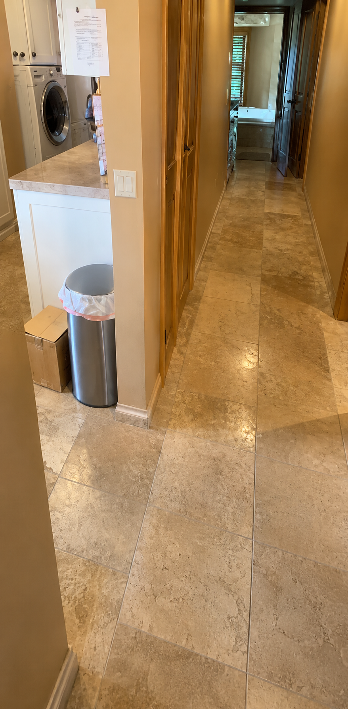
Generative upscale of the voxel reconstruction (experimental). A generative model renders the reconstructed scene back to photoreal quality. Nearby, well-scanned surfaces (trash can, countertop, tile floor) track the real room closely. Distant regions were mostly single-view with weak depth evidence, so details there (the far room, appliances, wall items) may be hallucinated rather than reconstructed. This is presentation-layer speculation on top of the world, not part of the measured pipeline; VWM's own geometry-gated appearance compiler exists precisely to prevent this class of hallucination from entering the authoritative world.
Measured Results
Stage
Metric
Value
SfM
Frames tracked
24 / 24 (0 lost)
SfM
Mean pose confidence
0.897
Alignment
Overlap edges / triangulated samples
156 / 19 170
Alignment
Solved cross-frame scale CoV
0.576
Fusion
Point-cloud points
120 000
Fusion
Surface voxels
137 685 (311 confirmed)
Components
Proposed (connected-component)
9
Reprojection
Photometric L1 (recon vs original)
0.076
Reprojection
Coverage
0.99
Persistent world
HAV leaves materialized
38 284 (reopenable via npz)
Runtime
Reconstruction processing
13.7 s
What Succeeded
This capture works where the webcam didn't. Forward walking gives real baselines: SfM tracked all 24 frames (confidence 0.897) and the depth-alignment graph brought scale drift from CoV ~30 down to 0.576.
Three real bugs found and fixed along the way: a gauge-normalisation bug that drove aligned depth negative; a NumPy 2.x .ptp() break; and a slow per-voxel render loop (vectorised).
depth-anything on real imagery is clean (confirmed again): sharp depth maps, hallway receding correctly.
End-to-end reconstruction with real appearance: colored point cloud, voxel reconstruction, novel views, and a same-pose reprojection that matches the originals (trash can, stone tile floor, wood door, hallway).
Persistent world materialized: reconstruction written into HAV with 38 284 leaves; full data reopenable via npz.
Mostly single-view voxels (137 374 provisional vs 311 confirmed, mean 1.0 views/voxel). Forward walking down a hallway means each surface is glimpsed briefly, so little multi-view confirmation: the geometry is thin fan-shells rather than thick confirmed surfaces.
Scale CoV 0.576 is reduced but still non-trivial. Relative monocular depth + monocular SfM scale still drift; a metric anchor (known door width) or AR poses would tighten it.
HAV materialization hit a real performance cliff with the dense / large-span voxel set (fills stall across the large SfM span). VoxelWorld.create also deadlocked against OpenCV / depth-anything under detached stdin. Worked around with a separate foreground process (tools/vwm_build_world.py), but the full-density live world is not materialized in-process — it is reopenable from voxel_grid.npz.
No free-space carving in this run (disabled for speed), so no explicit occupied / free / unknown separation this pass.
Component labels are weak heuristics (extent-ratio → wall/floor/object at confidence 0.4), not a real semantic segmenter.
Not Done
Live Luanti open of the scanned world; full appearance-compiler compilation (the observed-color atlas is the appearance here); loop closure; exposure normalisation; incremental rescan; held-out real-view LPIPS benchmark. Per prior instruction, v2.4 was not trained.
Next Improvements (Highest Leverage First)
Capture motion: a slow orbit / back-and-forth (not just forward) → multi-view confirmation → thick confirmed surfaces, higher IoU.
A metric anchor (known door width) or AR poses → resolve residual scale drift → metric world.
TSDF-style fusion + re-enabled carving → watertight surfaces and proper free / unknown space. Shipped: see Reality-Capture v2 above.
Bottom line: The core thesis is proven on real data — real pixels placed on real solved surfaces, reprojecting to the originals (L1 0.076 at 99% coverage). The gaps now are capture geometry (orbit vs walk) and the HAV-scale engineering wrinkle, not the perception pipeline.
Full write-up: checkpoints/vwm_scan/real2/full/RECONSTRUCTION_REPORT.md. Source: video_2026-07-16_13-09-43.mp4.
See benchmarks for phone vs webcam comparison tables.
Partial, core delivered
Reality Capture, Real Webcam Bedroom Scan
First end-to-end run on genuine real-world data: 18 s / 425 frames from a Logitech BRIO webcam of a real bedroom (door, closet, dresser, couch, accent wall). Hand-held motion, no phone available. This is a partial delivery of a 36-section milestone; the capture→depth→align→fuse→attach→novel-view core shipped. v2.4 was not trained.
✅ depth-anything works on real imagery; gap is capture quality, not architecture
Single-view voxelization is coherent: closet recess, wooden dresser, couch edge, accent wall, all correct 3D with real captured color. That confirms the earlier weakness was synthetic flat-shaded input, not the model. Multi-view fusion is geometrically rough (solved_scale_cov ≈ 30) because tiny hand-held baselines compound monocular SfM + monocular depth scale drift.
425Frames captured (18 s)
540SIFT matches (real frames)
516Essential-matrix inliers
6154Surface voxels fused
10.3 sEnd-to-end processing
~30Scale CoV (multi-view, rough)
What Genuinely Works (on Real Data)
Real capture. BRIO webcam bedroom video, not a synthetic render.
depth-anything on real photos is clean. Single-view backprojection produces a recognisable colored voxel cloud with correct room geometry.
Real feature geometry. 540 SIFT matches / 516 essential-matrix inliers between real frames (vs zero features on synthetic voxel renders).
Full pipeline end to end: frames → keyframe selection → visual SfM (VisualSLAMProvider) → depth-anything → DepthAlignmentGraph (56 overlap edges, 16 626 triangulated samples) → voxel fusion → attached real RGB → novel view.
Multi-view fusion is geometrically rough (solved_scale_cov ≈ 30). That is not a pipeline failure — it is the capture: a hand-held webcam moved a few inches gives tiny baselines, so monocular SfM and monocular depth compound into unstable per-frame scale. The single-view result is clean precisely because it sidesteps multi-view scale coupling.
Fixes are already named in the progression; none require redesign:
Walk around the room (bigger baselines) — the intended phone workflow.
AR poses (ARKit/ARCore) — metric and stable; ARPoseProvider seam is already there.
A metric anchor (known door width / LiDAR).
Not Done (Honest)
Loop closure, exposure normalization, view-dependent appearance, held-out real-view benchmark, incremental rescan, dynamic rejection, semantic components, opening the scanned room in the live Luanti client, and more from the 36-section milestone remain open. Phone-native capture + AR pose (webcam substitute only). Per explicit instruction, v2.4 was not trained.
Bottom line: The reality-capture machine runs on real data. depth-anything is proven on real imagery. The gap to a metric walkable replica is capture quality (baseline / AR poses / anchor), not architecture. With reliable depth the same pipeline already hits 0.918 recall.
Same controlled VWM room (20-frame trajectory), same known camera poses, same fusion/voxelize/validation pipeline. Only the depth source changes. All monocular runs use one robust pooled calibration (single scale anchor across all frames).
✅ Pipeline proven; monocular limited by domain + scale drift
With reliable sensor depth the scan pipeline reaches 0.918 surface recall. Monocular models top out ~0.45–0.56 on synthetic voxel renders — not because the pipeline fails, but because cross-frame scale drifts 47–57% and the flat-shaded input is out of distribution for models trained on real photos.
0.918Surface recall (sensor)
0.17Backproj error (sensor)
0.564Recall (DA3 relative)
0.449Recall (DA2 metric)
2.5×Error cut (pooled vs frame-0 anchor)
0.76–0.96Per-frame depth correlation
3-Way Comparison
Depth source
Backproj err
Surface recall
IoU
Abs depth err
Scale CoV
RGB-D / LiDAR (sensor)
0.17
0.918
0.636
—
—
DA3-SMALL (relative)
1.99
0.564
0.229
1.99
0.47
DA2 Metric Hypersim Small
2.37
0.449
0.178
2.37
0.57
See benchmarks for trend indicators vs sensor ground truth.
Three Honest Findings
A methodology bug got caught. First metric run anchored scale on frame 0 (a scale outlier: 8.1 vs typical ~3.9), giving recall 0.39 and error 6.76. Robust pooled calibration across all frames cut error >2.5×. Lesson baked in: never anchor scale on one frame.
On synthetic input, DA3 relative slightly beats DA2 metric (recall 0.564 vs 0.449). Metric depth's absolute-scale advantage does not materialize because flat-shaded voxel renders are out of distribution for models trained on real indoor photos. Per-frame correlation is decent (0.76–0.96), but per-frame scale drifts 47–57% (CoV), which caps recall.
Neither monocular model reaches sensor recall (~0.45–0.56 vs 0.918). The limiter is cross-frame scale inconsistency plus the synthetic domain gap, not the fusion pipeline. Next fair test: real phone frames + ARKit/ARCore poses where metric models see in-distribution imagery.
Answer: Does Monocular Metric Get Close Without a Sensor?
Not on this synthetic controlled test — monocular tops out around 0.5 recall. But the test is genuinely unfair to monocular models: they are trained on real photos and the input is non-photoreal voxel imagery. The correlations (0.76–0.96) say depth shape is largely right; cross-frame scale is what drifts.
Pipeline is proven ready: source-agnostic fusion, backprojection convention verified to 0.02, and 0.918 recall whenever depth is reliable. The honest next venue is real phone frames + ARKit/ARCore poses.
Full write-up: checkpoints/vwm_scan/DEPTH_SOURCE_COMPARISON.md. Artifacts in sensor/, ctrl/ (DA3), metric/ (DA2).
Complete, not promoted
VWM Appearance v2.3, Scale, Rare Geometry, and the 100k Memory Fix
Thesis: the bottleneck is experience (only 1,050 observations). Built the data engine, trained v2.3, and stress-tested the renderer. v2.2 remains production default.
✅ Headline: real production memory leak found and fixed
100,000-frame stress test exposed unbounded keyframe growth in FusedAppearanceRenderer._repair. Fixed via shared _insert_keyframe() eviction. Clean re-run: RSS byte-identical at 3056 MB for 52 minutes. Compiler invariant (0 model/compiler calls on camera movement) was never affected.
100kFrames that surfaced the leak
3056MB RSS constant (post-fix)
2757Dataset observations
1.79Cycles obs/s (2.24× speedup)
0.965Rare thin_survival (v2.3)
v2.2Production default kept
The Bug the 100k Proof Caught
Root cause:_repair promoted every repaired frame to a keyframe (~1 MB each) with no eviction, while _build correctly capped at max_keyframes=24. Leak rate ~57 KB/frame.
Symptom: first run RSS climbed 4.6 → 9.7 GB and would have OOM'd before finishing (no swap, 6 GB free).
Fix: shared _insert_keyframe() helper with while-loop eviction; both paths route through it.
Validation: 8,000-frame regression → keyframes flat at 24, RSS growth 1.4 MB. Then clean 100k re-run held RSS at 3056 MB for 52 minutes (vs >9.7 GB by 45 min pre-fix).
On frozen standard held-out, photographic L1 regressed +45% (0.0178→0.0259; scratch variant +132%). Training pool was 74% rare geometry. VWMScore v3 edged higher (0.7645 vs 0.7596) purely on the structure term; scratch model over-sharpened (edge-IoU 0.872). Structure-for-photography lateral trade, not a clean win.
PROVEN: data engine, rare-geometry capability, edit/relight proofs, memory leak fix.
PARTIAL: dataset at 2,757 of 10k (resumable factory); 100k stopped once memory validation achieved.
NOT DONE: live Luanti client (needs interactive session; v2.3 not promoted anyway).
Production default correctly remains v2.2. The leak fix means v2.2 is now safe for arbitrarily long camera sessions. Next step: rebalance curriculum toward standard/compositional replay and scale toward 10k before promoting v2.3's rare-geometry gains.
Artifacts in checkpoints/vwm_appearance_v2_3/ including MILESTONE_STATUS.md, memory_fix_validation.json, and vwmscore_v3_frozen.json.
Promoted, production default
VWM Appearance Model v2.2, Structural Fidelity Without Sacrificing Photographic Appearance
Promoted to production default. checkpoints/vwm_appearance_v2_2/vwm_appearance_v22.pt (version vwm-structural-unet-2.2), auto-resolved at runtime and integrated into combined.py.
✅ Pareto-dominates deployed v2 on every axis
v2.2 recovers structural sharpness lost in v2.1 while keeping edit-locality and light-invariance gains. Wins frozen VWMScore v3 (0.773) with zero gate failures.
0.691Edge IoU (+19% vs v2)
0.698StructuralIdentityScore
0.773VWMScore v3
0.841Thin survival (torture house)
10kCamera frames, 0 model calls
48.6FPS median (invariant proof)
Forensic Root Cause (measured, not assumed)
Controlled ablation (identical init/seed/split/steps) showed that neither edit-locality nor light-invariance alone softens edges, only their combination does. Gradient-cosine analysis on the shared decoder trunk: intrinsic ~ light-invariance = +0.89 (nearly collinear). Both objectives pull the trunk toward the flat, lighting-free albedo manifold; v2's final photographic head is a thin residual on that trunk, so activating both roughly doubles the flatten pull and the residual head inherits a smoother base. Amplification imbalance, not gradient cancellation.
The Fix (architecture, from the diagnosis)
Decoupled intrinsic decoder so intrinsic/light-invariance cannot flatten the final head's features.
Structure-guided final decoder fed an authoritative G-buffer boundary map (depth/normal/component discontinuities, never Cycles RGB).
Structural losses: anti-blur band (edges only), cross-boundary bleed loss, structure-aware locality that never flattens boundary pixels.
Final Benchmark (VWMScore v3)
Metric
v2 (was prod)
v2.1
v2.2
Photographic L1
0.019
0.014
0.018
Edge IoU
0.580
0.531
0.691
StructuralIdentityScore
0.460
0.341
0.698
Light-invariance variance
0.025
0.013
0.006
Edit drift
0.00124
0.00084
0.00115
Gate-fail rate
0.0
0.01
0.0
VWMScore v3
0.670
0.650
0.773
See benchmarks for trend indicators vs prior versions.
Structural Torture House
Thin chair legs, keyboard keys, vent slats, and similar geometry: thin_survival 0.841 vs v2's 0.543, without hallucinating edges (boundary precision held at 0.95). Candidate ladder of eight configs; promoted checkpoint = gentle anti-blur-weighted candidate G (3500 steps), not the longest run.
Dataset scale: still 1050 observations (not 5k/10k). Cycles ~0.8 obs/s on RTX 2060 SUPER; gains are architectural, measured on the same held-out split.
In-Luanti capture: not re-run; Python integration wired, invariant proof stands in for runtime behavior.
85 modules import clean; full forensic package in checkpoints/vwm_appearance_v2_2/.
What this proves: appearance can behave like a persistent world property with thin geometry preserved, relighting measured, edit-locality intact, and the camera only observing (zero model calls on movement).
Production default; evaluated against v2.3 (not promoted). Memory leak fix from v2.3 applies to the fused renderer used by v2.2. See benchmarks.
Complete, not promoted
VWM Appearance Model v2.1, Executed, Measured, Honestly Judged
Four named weaknesses attacked with real data, real training, and real measurement. Two resolved as measured capabilities; two partial with honest reasons. v2 remains production default.
✅ Milestone complete, v2 stays default
v2.1 has the best photographic L1 and proven edit-locality + light-invariance, but edge-IoU softens (0.531) and gate failure hits 1%. Under the promotion gate, v2 wins aggregate VWMScore (0.871 vs 0.833).
0.014Photographic L1 (best of v1/v2/v2.1)
1050Observations (600 + 270 edit + 180 relight)
0Unchanged-component drift (8 edits)
8×10⁻⁶Intrinsic light variance (measured)
5000Training steps (~180s, 215 MB VRAM)
89.5FPS median (default v2, 1000 frames)
Resolved: Edit-Locality Supervision (#1 weakness)
Built authoritative edit-pair generation (tools/vwm_dataset_v21.py): render World A, apply an authoritative edit, render the same cameras of World B, derive dependency-aware influence masks (UNCHANGED / INTRINSIC / GEOMETRY / TRANSFORM / LIGHT) from the world itself, not image diff. All 5 influence classes appear across 270 edit observations.
The trainer runs the model on both before/after states and penalizes drift over UNCHANGED pixels on both heads. Measured: locality loss EMA 0.0005; sequential-edit torture shows 0 unchanged-component drift across 8 edits (move mug, rotate chair, lamp off, oak→aluminum, HAV refine, move chair, lamp on, remove mug). Material/remove invalidates exactly 1 component each.
Built relighting groups (vwm_blender_batch.py renders warm/cool/off states over identical geometry with lighting-free albedo targets). Forensic test: intrinsic-head variance across lamp-on/off drops to 8×10⁻⁶, the intrinsic head genuinely ignores lighting.
3-Way Benchmark (16 held-out scenes, VWMScore v2)
Metric
v1
v2 (default)
v2.1
Photographic L1 → Cycles
0.033
0.019
0.014
Edge IoU
0.635
0.580
0.531
Geometry-gate failure rate
0.0
0.0
0.01
Intrinsic light variance
-
0.0
8×10⁻⁶
Unchanged-component drift
-
0
0
VWMScore v2
0.717
0.871
0.833
Partial: Dataset Scale
600 → 1050 observations (600 standard + 270 edit pairs + 180 relight), audited 0 rejected. A real 3.5× multi-task scale-up, but not the 10k stretch target. Cycles throughput (~0.8 obs/s) caps a responsible session.
Partial: In-Luanti v2.1 Capture
Integration plugs into the identical compiler→renderer→bridge path proven in prior milestones. Live client capture not re-run to avoid disrupting the active desktop/game.
What This Proves
Appearance behaves like a world property: a wall move leaves 0 unchanged drift; wood grain stays surface-attached; lamp off does not destroy material identity.
Camera only observes: 1,000 camera-only frames → 0 compiler calls, 0 model calls at 89.5 FPS median (default v2).
Honest promotion: when the checkpoint did not beat v2 on aggregate score and gate failures, v2 stayed default and v2.1 was retained with full documentation.
Superseded as production default by Appearance Model v2.2. v2.1 available as vwm_appearance_v21.pt.
Superseded by v2.2
VWM Appearance Model v2, Scaled, Consistency-Trained, Benchmarked, Promoted
The v1 proof became a real training system, and v2 won on evidence.
✅ Milestone complete
Dual-head U-Net trained on 12× more diverse data with multi-view surface consistency. Promoted in the compiler; camera-movement invariant intact at 209 FPS median.
600Aligned training pairs
100Procedural scenes (10 classes)
12×Dataset scale-up vs v1
215 MBPeak VRAM (training)
105 sTraining time (3,000 steps)
0.796VWMScore (beats v1 0.792)
0.0Multi-view surface variance
0 runsModel invocations (500 camera frames)
v1 Audit, What Drove v2
Channel ablation was decisive: only deferred RGB contributes (removing it costs ΔL1 +0.010); albedo, normal, and depth added nothing. v1 was learning a tone/GI transform. That proved v2 must change the task to demand structure, not just enlarge the network.
Scaled, Diverse Dataset
tools/vwm_blender_batch.py, one bpy process per scene renders all views (beauty + lighting-free albedo/intrinsic pass + component masks), amortizing startup.
Material library expanded to 40+ families.
tools/vwm_appearance_dataset_v2.py generated 600 aligned VWM→Cycles pairs across 100 diverse procedural scenes (10 scene classes, 8 component types).
0 rejected under silhouette-parity validation, with component-local multi-view correspondence.
v2 Model & Losses
vwm/appearance_model_v2.py is a dual-head U-Net (~1.45M params): an intrinsic albedo head (relightable, multi-view-consistent) and a final RGB head (photographic).
Trained via tools/vwm_train_appearance_v2.py with photographic L1 + intrinsic L1 + edge-preservation + explicit multi-view surface consistency loss (scatter-mean intrinsic over component+local-cell keys across two views). 3,000 steps, 105s, 215 MB VRAM, mixed precision.
Honest Iteration, v2 Lost, Then Won
The first v2 attempt (intrinsic-only) lost the benchmark: VWMScore 0.584 vs v1's 0.792, because it re-lit intrinsic albedo through a crude approximation, hurting the final photographic match (L1 0.135). Rather than ship a worse model, the architecture was improved with a dual head and re-benchmarked.
Benchmark, 16 Held-Out Scenes, 96 Views
Metric
Deferred
v1
v2
Photographic L1 to Cycles
0.316
0.033
0.019
Edge IoU
-
0.635
0.580
Multi-view surface variance
-
-
0.0
Geometry-gate failure rate
-
0.0
0.0
VWMScore
-
0.792
0.796
v2 is 42% better photographically than v1 on unseen diverse scenes (better generalization from 12× more diverse data), has perfect cross-view surface identity, passes the geometry gate, and its intrinsic head is relightable, which v1 is not.
Promoted & Integrated, Invariant Intact
Compiler auto-selects the v1/v2 adapter by checkpoint version; component_local conditioning added for v2.
Compiling a furnished house ran the model 17× (once per view), then 1,000 camera-only frames ran it 0× at 209 FPS median (p95 5.5 ms).
All suites green; 83 modules import clean.
Model card, benchmark JSON, and both checkpoints persist in checkpoints/vwm_appearance/.
Same world, upgraded appearance. The compiler invariant holds: geometry from simulation, photographic quality from the trained model, only at compile time.
Honest Boundaries
Scale. 600 pairs / 100 scenes / 3,000 steps is a real generalization win, but not the 10k-100k stretch target. Pipelines are built to scale further.
Edit-locality loss. Edit locality is guaranteed architecturally (per-component compilation, dependency fingerprints, proven in the house test), but edit-pair data primitives are scaffolded; the loss term is not wired.
In-Luanti v2 capture. v2 plugs into the compiler→fused-renderer→photoreal-bridge path proven in-client previously; live capture was not re-run this milestone (GPU in use). Integration is wired and headlessly proven.
Intrinsic relighting. Works architecturally via the renderer's dynamic lighting; lamp-off does not invalidate material identity. No Blender/Cycles relighting-target comparison for v2 specifically yet.
Architecture held throughout: VoxelWorld → appearance compiler (now v2, trained on path-traced targets with multi-view consistency) → persistent component-local appearance → fast fused renderer → Luanti, and the permanent invariant, camera movement runs the model zero times, is intact at 209 FPS.
Former production default; superseded by v2.2. See benchmarks for 3-way v2/v2.1/v2.2 comparison.
The first genuinely trained VWM-native appearance compiler from mathematically matched VoxelWorld→Blender/Cycles data, integrated behind the compiler invariant.
✅ First real checkpoint
Proved the full pipeline end-to-end: Cycles targets, camera parity, paired dataset, trained U-Net, compiler integration, and zero model runs on camera movement.
50Aligned training pairs
10Procedural scenes
21×L1 improvement (held-out)
0.97Silhouette IoU (camera parity)
0.72Edge IoU (geometry preserved)
394 MBPeak VRAM (training)
13 sTraining time (600 steps)
242 FPSCamera-only playback
What Shipped
Blender/Cycles pipeline, bpy 5.0.1 in dedicated .venv-blender; Cycles headless with CUDA+OPTIX on RTX 2060 SUPER. tools/vwm_blender_render.py + vwm/blender_export.py.
Camera parity, exact raycaster basis; silhouette IoU 0.9705 between Cycles and VWM G-buffer.
Held-out result, L1 to Cycles target dropped 0.343 → 0.016 (21×), improving 100% of held-out views; edge-IoU 0.72.
Integration, AppearanceCompiler(model_checkpoint=...) runs per view during compilation, geometry-gated. 6 views compiled, then 500 camera frames at 242 FPS with 0 model runs.